from sklearn.datasets import make_blobs
import numpy as np
centers = [[2, 3], [5, 5], [1, 8]]
n_classes = len(centers)
data, labels = make_blobs(n_samples=150,
centers=np.array(centers),
random_state=1)8 Data Science (Advanced)
Conteúdos
Aprendizagem supervisionada utilizando o scikit.
8.1 KNN

K-nearest neighbors (KNN) depende do número de vizinhos (k) e da medida de distância:
- euclidean
- manhattan
- chebyshev
- minkowski
- seuclidean
- mahalanobis
é também comum parametrizar weights (uniform ou distance)
sklearn.neighbors.KNeighborsClassifier
O algoritno pode ser: + ball_tree + kd_tree + brute + auto
Exemplo
gerar dados de exemplo:
import matplotlib.pyplot as plt
# define cores
colours = ('green', 'red', 'blue')
fig, ax = plt.subplots()
for n_class in range(0, n_classes):
ax.scatter(data[labels==n_class, 0], data[labels==n_class, 1],
c=colours[n_class], s=10, label=str(n_class))
ax.legend(loc='upper right')
plt.show()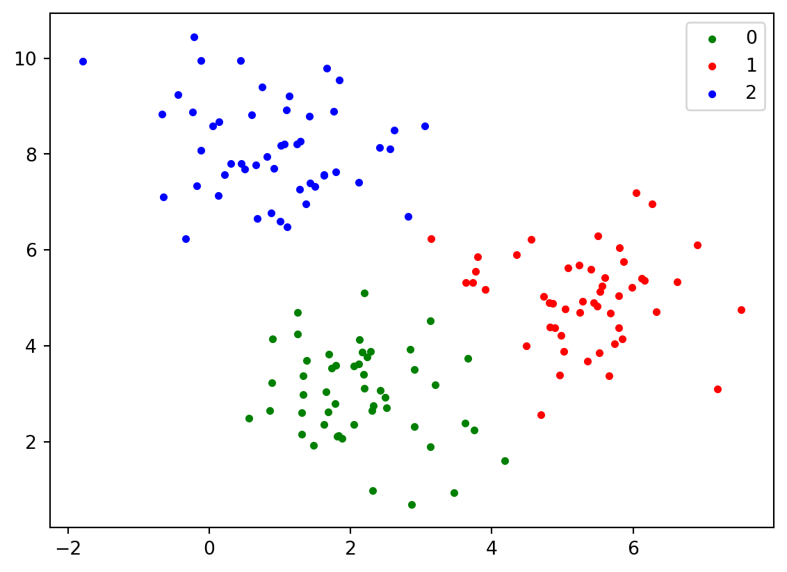
dividir os dados em teste e treino
from sklearn.model_selection import train_test_split
X_train, X_test, y_train, y_test = train_test_split(data, labels,
train_size=0.8, test_size=0.2, random_state=1)y_trainarray([0, 0, 1, 0, 1, 1, 1, 1, 1, 0, 2, 0, 1, 1, 1, 1, 2, 1, 1, 1, 2, 2,
2, 2, 1, 0, 0, 0, 0, 2, 1, 1, 0, 1, 2, 2, 0, 1, 1, 2, 2, 1, 2, 0,
0, 1, 0, 0, 0, 2, 0, 2, 0, 1, 2, 1, 2, 2, 2, 0, 2, 0, 2, 0, 2, 2,
2, 2, 2, 1, 1, 1, 2, 2, 0, 2, 1, 0, 1, 0, 0, 0, 2, 1, 0, 1, 0, 0,
1, 0, 0, 2, 1, 2, 2, 2, 0, 2, 2, 1, 2, 1, 1, 1, 0, 2, 2, 0, 0, 2,
2, 1, 1, 1, 1, 2, 0, 0, 2, 1])# Create and fit a nearest-neighbor classifier
from sklearn.neighbors import KNeighborsClassifier
# a instância do KNN está a ser criada sem parâmetros
knn = KNeighborsClassifier()
knn.fit(X_train, y_train)
y_pred = knn.predict(X_test)
print("Previsões do classificador:")
print(y_pred)
print("Target:")
print(y_test)Previsões do classificador:
[2 2 2 0 0 1 1 2 2 1 0 1 0 0 2 0 0 0 1 0 0 1 1 2 0 0 0 1 2 1]
Target:
[2 2 2 0 0 1 1 2 2 1 0 1 0 0 2 0 0 0 1 0 0 1 1 2 0 0 0 1 2 1]from sklearn.metrics import accuracy_score
print(accuracy_score(y_pred, y_test))1.0exemplo ad hoc para calcular accuracy
from sklearn.metrics import accuracy_score
example_predictions = [0, 2, 1, 3, 2, 0, 1]
example_labels = [0, 1, 2, 3, 2, 1, 1]
print(accuracy_score(example_predictions, example_labels))0.57142857142857148.1.1 KNN com Dataset Iris
from sklearn import datasets
#from sklearn.model_selection import train_test_split
iris = datasets.load_iris()
data, labels = iris.data, iris.target
X_train, X_test, y_train, y_test = train_test_split(data, labels, train_size=0.7, test_size=0.3, random_state=1)#import matplotlib.pyplot as plt
colours = ('purple', 'red', 'blue')
n_classes = 3
fig, ax = plt.subplots()
for n_class in range(0, n_classes):
ax.scatter(data[labels==n_class, 0], data[labels==n_class, 1],
c=colours[n_class], s=10, label=str(n_class))
ax.legend(loc='upper right')
plt.show()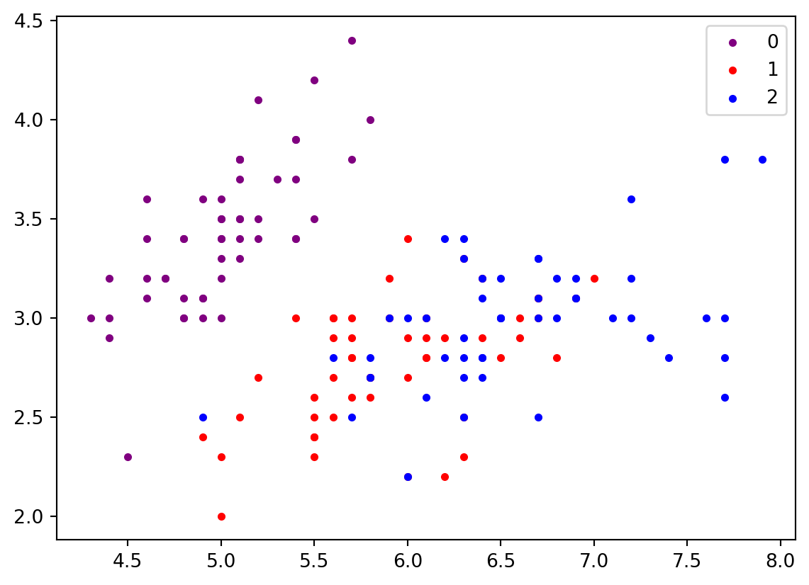
# Create and fit a nearest-neighbor classifier
# sklearn.neighbors import KNeighborsClassifier
# instanciação com parâmetros
knn2 = KNeighborsClassifier(algorithm='auto',
leaf_size=30,
metric='minkowski',
p=2,
metric_params=None,
n_jobs=1,
n_neighbors=3,
weights='uniform')
knn2.fit(X_train, y_train)
y_pred = knn2.predict(X_test)
print("Previsões do classificador:")
print(y_pred)
print("Target:")
print(y_test) Previsões do classificador:
[0 1 1 0 2 1 2 0 0 2 1 0 2 1 1 0 1 1 0 0 1 1 1 0 2 1 0 0 1 2 1 2 1 2 2 0 1
0 1 2 2 0 1 2 1]
Target:
[0 1 1 0 2 1 2 0 0 2 1 0 2 1 1 0 1 1 0 0 1 1 1 0 2 1 0 0 1 2 1 2 1 2 2 0 1
0 1 2 2 0 2 2 1]#from sklearn.metrics import accuracy_score
print(accuracy_score(y_pred, y_test))0.9777777777777777y_test_proba = knn2.predict_proba(X_test)
y_test_proba[:10]array([[1. , 0. , 0. ],
[0. , 1. , 0. ],
[0. , 1. , 0. ],
[1. , 0. , 0. ],
[0. , 0. , 1. ],
[0. , 0.66666667, 0.33333333],
[0. , 0. , 1. ],
[1. , 0. , 0. ],
[1. , 0. , 0. ],
[0. , 0. , 1. ]])from sklearn.metrics import confusion_matrix
import pandas as pd
cm_thr50 = confusion_matrix(y_test, y_pred)
print(pd.DataFrame(cm_thr50,columns = ['pred: 0','pred: 1','pred: 2'],
index = ['real: 0','real: 1','real: 2'])) pred: 0 pred: 1 pred: 2
real: 0 14 0 0
real: 1 0 18 0
real: 2 0 1 12from sklearn.metrics import precision_score, recall_score, accuracy_score
# por omissão average='binary' mas pode também ser None 'micro', 'macro' e 'weighted'
print('Precision: %.3f' % precision_score(y_test, y_pred, average='micro'))
print('Recall: %.3f' % recall_score(y_test, y_pred, average='micro'))
print('Accuracy: %.3f' % accuracy_score(y_test, y_pred))Precision: 0.978
Recall: 0.978
Accuracy: 0.978from sklearn.metrics import classification_report
print(
f"Classification report for classifier {knn2}:\n"
f"{classification_report(y_test, y_pred)}\n"
)Classification report for classifier KNeighborsClassifier(n_jobs=1, n_neighbors=3):
precision recall f1-score support
0 1.00 1.00 1.00 14
1 0.95 1.00 0.97 18
2 1.00 0.92 0.96 13
accuracy 0.98 45
macro avg 0.98 0.97 0.98 45
weighted avg 0.98 0.98 0.98 45
8.1.2 Avaliação do modelo


Bias / Variance trade-off
\(Total Error = Bias^2 + Variance + Irreductible Error\)
 Exemplo
Exemplo
Criar dois grupos e prever o grupo a que pertence cada observação de acordo com os seus vizinhos:
from sklearn.datasets import make_blobs
import matplotlib.pyplot as plt
import numpy as np
centers = [[2, 3], [5, 5]]
n_classes = len(centers)
data, labels = make_blobs(n_samples=200,
centers=np.array(centers),
random_state=1)import matplotlib.pyplot as plt
colours = ('orange', 'blue')
# n_classes = 2
fig, ax = plt.subplots()
for n_class in range(0, n_classes):
ax.scatter(data[labels==n_class, 0], data[labels==n_class, 1],
c=colours[n_class], s=10, label=str(n_class))
ax.legend(loc='upper right')
plt.show()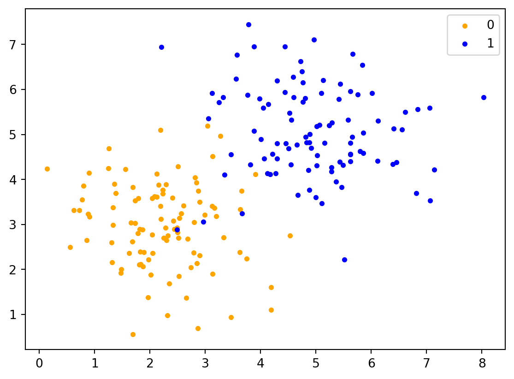
dividir os dados em treino e teste:
from sklearn.model_selection import train_test_split
X_train, X_test, y_train, y_test = train_test_split(data, labels, train_size=0.8, test_size=0.2, random_state=1)modelar para diferentes K:
# Create and fit a nearest-neighbor classifier
from sklearn.neighbors import KNeighborsClassifier
from sklearn import metrics
# vamos aumentar a complexidade aumentando o nº de vizinhos
k_range = range(1,20)
scores = {}
scores_list = []
for k in k_range:
knn = KNeighborsClassifier(n_neighbors = k)
knn.fit(X_train, y_train)
y_pred = knn.predict(X_test)
scores[k] = metrics.accuracy_score(y_test, y_pred)
scores_list.append(metrics.accuracy_score(y_test, y_pred))
print(*scores_list, sep = ", ")0.9, 0.875, 0.9, 0.925, 0.95, 0.925, 0.95, 0.95, 0.95, 0.95, 0.95, 0.95, 0.95, 0.95, 0.95, 0.95, 0.95, 0.95, 0.95import matplotlib.pyplot as plt
# vamos fazer o plot da relação entre o aumento do nº de vizinhos k
# e o valor da accuracy medido nos dados de Teste
plt.plot(k_range, scores_list)
plt.xlabel("Valor de k no KNN")
plt.ylabel("Testing Accuracy")
plt.show()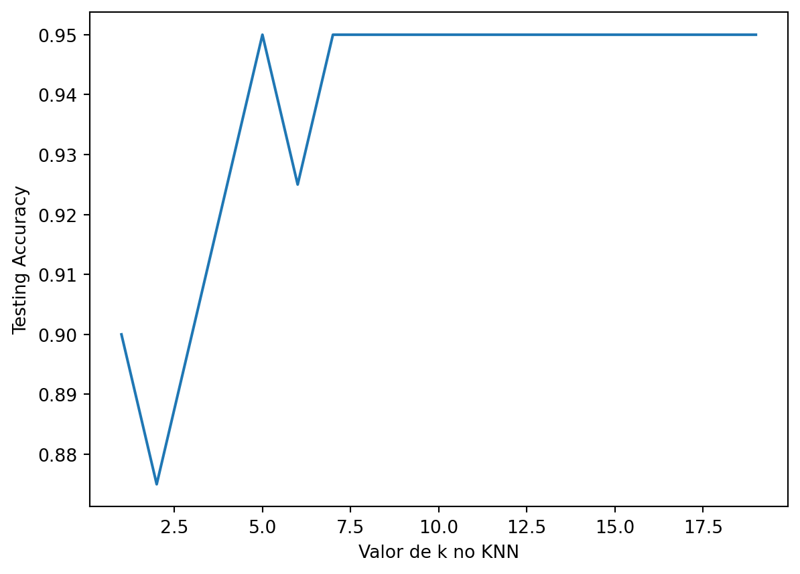
# parece não haver ganhos a partir dos 8 vizinhos
knn = KNeighborsClassifier(n_neighbors = 8)
knn.fit(X_train, y_train)
classes = {0: 'doces', 1: 'salgados'}
x_new = [[5.88213357, 3.75041164], [1.6546771, 3.6924546 ]]
y_predict = knn.predict(x_new)
y_predict_prob = knn.predict_proba(x_new)
print('O elemento {0} gosta mais de {1}'.format(x_new[0],classes[y_predict[0]]))
print('O elemento {0} gosta mais de {1}'.format(x_new[1],classes[y_predict[1]]))O elemento [5.88213357, 3.75041164] gosta mais de salgados
O elemento [1.6546771, 3.6924546] gosta mais de doces8.1.3 Matriz de confusão
modelo KNN com K = 6
# Create and fit a nearest-neighbor classifier
from sklearn.neighbors import KNeighborsClassifier
from sklearn import metrics
knn = KNeighborsClassifier(n_neighbors = 6)
knn.fit(X_train, y_train)
y_pred = knn.predict(X_test)
score = metrics.accuracy_score(y_test, y_pred)
score0.925probabilidades previstas para os positivos (2ª coluna)
knn.predict_proba(X_test)[:, 1]array([1. , 0.16666667, 0.66666667, 0. , 1. ,
1. , 1. , 0.5 , 0. , 0. ,
1. , 1. , 1. , 1. , 1. ,
0.16666667, 1. , 1. , 1. , 0.16666667,
0. , 0.66666667, 0. , 1. , 1. ,
1. , 0.16666667, 1. , 0. , 0.83333333,
1. , 0. , 1. , 1. , 0. ,
1. , 0.33333333, 0. , 1. , 0.16666667])from sklearn.metrics import confusion_matrix
confusion_matrix(y_test, y_pred)array([[14, 1],
[ 2, 23]], dtype=int64)com labels
cm = confusion_matrix(y_test, y_pred)
print(pd.DataFrame(cm,columns = ['pred: No','pred: Yes'],
index = ['real: No','real: Yes'])) pred: No pred: Yes
real: No 14 1
real: Yes 2 23from sklearn.metrics import precision_score, recall_score, accuracy_score
print('Precision: %.3f' % precision_score(y_test, y_pred))
print('Recall: %.3f' % recall_score(y_test, y_pred))
print('Accuracy: %.3f' % accuracy_score(y_test, y_pred))Precision: 0.958
Recall: 0.920
Accuracy: 0.925cálculo “manual”:
# Accuracy = TP + TN / P + N
f_acc = (23 + 14)/ (( 2 + 23) + (14 + 1))
f_acc
# Recall ou sensitivity ou TPR - linha yes da matriz
# Dos que são positivos quantos previu?
# TPR = TP / P
f_recall = 23 / 25
f_recall0.92# Precision - coluna yes da matriz
# Dos que previu como positivos quantos eram realmente positivos?
# Precision = TP / TP + FP
f_precision = 23 / (23 + 1)
f_precision
# Specificity ou Selectivity ou TNR - Linha no da matriz
# TNR = TN / N
f_specificity = 14 / (14 + 1)
f_specificity0.93333333333333338.1.4 ROC e AUC
Receiver Operating Characteristics (ROC) e Area Under the Curve (AUC)
model = knn.fit(X_train, y_train)
from sklearn.metrics import roc_curve, RocCurveDisplay
fpr, tpr, thresholds = roc_curve(y_test,model.predict_proba(X_test)[:,1], #
drop_intermediate=False)
knn_disp = RocCurveDisplay.from_estimator(model, X_train, y_train)
roc_disp = RocCurveDisplay.from_estimator(model, X_test, y_test, ax=knn_disp.ax_) # o ax diz que este novo objecto fica no objecto anterior
plt.show()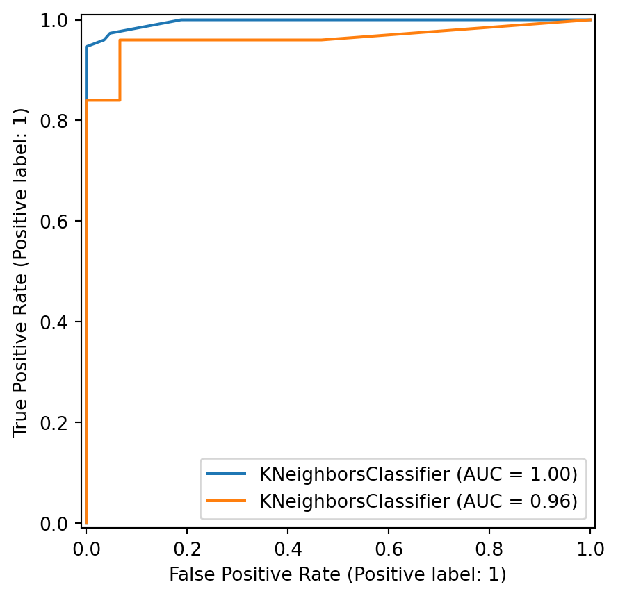
thresholdsarray([ inf, 1. , 0.83333333, 0.66666667, 0.5 ,
0.33333333, 0.16666667, 0. ])cm = confusion_matrix(y_test, y_pred)
print(pd.DataFrame(cm,columns = ['pred: No','pred: Yes'],
index = ['real: No','real: Yes'])) pred: No pred: Yes
real: No 14 1
real: Yes 2 23# FPR = FP / N
FPR_50 = 1 / 15
FPR_500.06666666666666667# TPR = TP / P
TPR_50 = 23 / 25
TPR_500.92threshold = 0.33
y_pred = (model.predict_proba(X_test)[:, 1] > threshold)
cm_thr33 = confusion_matrix(y_test, y_pred)
print(pd.DataFrame(cm_thr33,columns = ['pred: No','pred: Yes'],
index = ['real: No','real: Yes'])) pred: No pred: Yes
real: No 13 2
real: Yes 1 24# FPR = FP / N
FPR_33 = 2 / 15
# TPR = TP / P
TPR_33 = 24 / 25
print('O FPR é {0} quando o TPR é {1}' . format(FPR_33,TPR_33))O FPR é 0.13333333333333333 quando o TPR é 0.96threshold = 0.83
y_pred = (model.predict_proba(X_test)[:, 1] > threshold)
cm_thr83 = confusion_matrix(y_test, y_pred)
print(pd.DataFrame(cm_thr83,columns = ['pred: No','pred: Yes'],
index = ['real: No','real: Yes'])) pred: No pred: Yes
real: No 14 1
real: Yes 4 21# FPR = FP / N
FPR_83 = 1 / 15
# TPR = TP / P
TPR_83 = 21 / 25
print('O FPR é {0} quando o TPR é {1}' . format(FPR_83,TPR_83))O FPR é 0.06666666666666667 quando o TPR é 0.84knn_disp = RocCurveDisplay.from_estimator(model, X_test, y_test)
plt.show()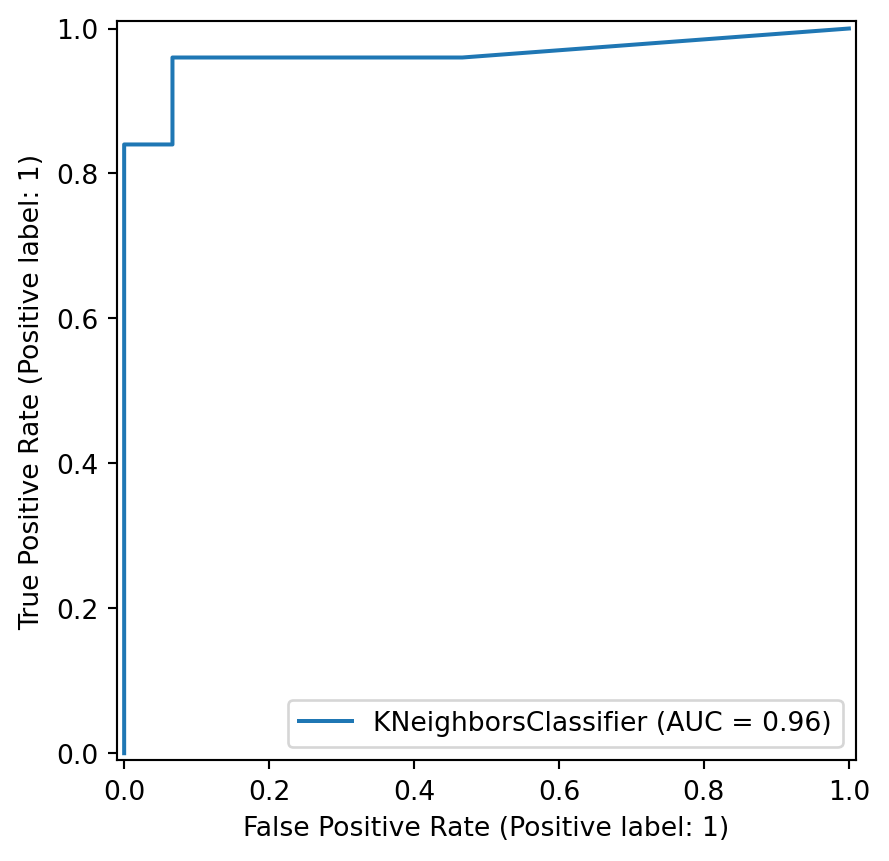
8.2 Regressão Linear
Problemas mais comuns:
- relação não linear entre a resposta e predictor
- correlação dos termos de erro
- variância não constante dos erros
- outliers
- pontos com high-leverage
- colinearidade
import numpy as np
import pandas as pd
datadir ="data\\"
filename = "df_prep.csv"
df_hosp = pd.read_csv(f"{datadir}{filename}", index_col=0, verbose = False, encoding='latin-1')
df_hosp.head()C:\Users\bruno.lima\AppData\Local\Temp\ipykernel_19764\1222662527.py:7: FutureWarning: The 'verbose' keyword in pd.read_csv is deprecated and will be removed in a future version.
df_hosp = pd.read_csv(f"{datadir}{filename}", index_col=0, verbose = False, encoding='latin-1')| NORDEM | NUTS2 | C10001 | C20001 | C21001 | C21011 | C21021 | C21031 | C21041 | C21061 | ... | C31001 | C31011 | C31021 | C31031 | C31041 | C31051 | C31061 | C31071 | C32001 | t_cirurgia | |
|---|---|---|---|---|---|---|---|---|---|---|---|---|---|---|---|---|---|---|---|---|---|
| ANO | |||||||||||||||||||||
| 2012.0 | 229.0 | 17.0 | 1458.0 | 247.0 | 159.00 | 2.0 | 11.0 | 0.0 | 5.0 | 0.0 | ... | 39.0 | 8.0 | 19.0 | 2.0 | 2.0 | 3.0 | 5.0 | 0.0 | 454.0 | yes |
| 2012.0 | 206.0 | 17.0 | 144.0 | 0.0 | 0.00 | 0.0 | 0.0 | 0.0 | 0.0 | 0.0 | ... | 0.0 | 0.0 | 0.0 | 0.0 | 0.0 | 0.0 | 0.0 | 0.0 | 46.0 | no |
| 2012.0 | 65.0 | 16.0 | 894.0 | 111.0 | 38.25 | 0.0 | 8.0 | 0.0 | 5.0 | 0.0 | ... | 0.0 | 0.0 | 0.0 | 0.0 | 0.0 | 0.0 | 0.0 | 0.0 | 337.0 | yes |
| 2012.0 | 106.0 | 17.0 | 801.0 | 166.0 | 108.00 | 0.0 | 12.0 | 0.0 | 7.0 | 0.0 | ... | 36.0 | 4.0 | 16.0 | 5.0 | 2.0 | 2.0 | 7.0 | 0.0 | 228.0 | yes |
| 2012.0 | 209.0 | 11.0 | 221.0 | 13.0 | 13.00 | 0.0 | 0.0 | 0.0 | 0.0 | 0.0 | ... | 8.0 | 0.0 | 0.0 | 1.0 | 0.0 | 1.0 | 6.0 | 0.0 | 80.0 | yes |
5 rows × 62 columns
df_hosp.describe()| NORDEM | NUTS2 | C10001 | C20001 | C21001 | C21011 | C21021 | C21031 | C21041 | C21061 | ... | C30001 | C31001 | C31011 | C31021 | C31031 | C31041 | C31051 | C31061 | C31071 | C32001 | |
|---|---|---|---|---|---|---|---|---|---|---|---|---|---|---|---|---|---|---|---|---|---|
| count | 86.000000 | 86.000000 | 86.000000 | 86.000000 | 86.000000 | 86.000000 | 86.000000 | 86.000000 | 86.000000 | 86.000000 | ... | 86.000000 | 86.000000 | 86.000000 | 86.000000 | 86.000000 | 86.000000 | 86.000000 | 86.000000 | 86.000000 | 86.000000 |
| mean | 118.081395 | 14.976744 | 642.744186 | 113.872093 | 73.979651 | 0.813953 | 6.941860 | 0.360465 | 2.953488 | 0.302326 | ... | 212.290698 | 22.941860 | 3.127907 | 6.220930 | 4.476744 | 3.465116 | 0.965116 | 3.465116 | 1.220930 | 189.348837 |
| std | 68.264230 | 3.620129 | 809.928453 | 172.413511 | 108.256016 | 2.144825 | 10.384779 | 1.146994 | 5.346592 | 1.701693 | ... | 255.792649 | 26.911775 | 4.752204 | 10.678622 | 5.740930 | 8.559409 | 1.482825 | 4.421066 | 2.783993 | 240.396475 |
| min | 3.000000 | 11.000000 | 0.000000 | 0.000000 | 0.000000 | 0.000000 | 0.000000 | 0.000000 | 0.000000 | 0.000000 | ... | 0.000000 | 0.000000 | 0.000000 | 0.000000 | 0.000000 | 0.000000 | 0.000000 | 0.000000 | 0.000000 | 0.000000 |
| 25% | 57.500000 | 11.000000 | 120.250000 | 7.750000 | 6.000000 | 0.000000 | 0.000000 | 0.000000 | 0.000000 | 0.000000 | ... | 34.250000 | 3.250000 | 0.000000 | 0.000000 | 0.000000 | 0.000000 | 0.000000 | 0.000000 | 0.000000 | 30.000000 |
| 50% | 119.000000 | 16.000000 | 338.500000 | 42.500000 | 33.000000 | 0.000000 | 2.000000 | 0.000000 | 0.000000 | 0.000000 | ... | 102.500000 | 10.000000 | 0.000000 | 0.000000 | 3.000000 | 1.000000 | 0.000000 | 2.000000 | 0.000000 | 85.500000 |
| 75% | 175.750000 | 17.000000 | 872.500000 | 162.500000 | 115.500000 | 0.000000 | 10.750000 | 0.000000 | 3.750000 | 0.000000 | ... | 321.250000 | 35.750000 | 4.000000 | 11.000000 | 6.000000 | 3.000000 | 1.000000 | 5.000000 | 1.000000 | 282.250000 |
| max | 229.000000 | 30.000000 | 5325.000000 | 1161.000000 | 719.000000 | 13.000000 | 51.000000 | 6.000000 | 31.000000 | 13.000000 | ... | 1515.000000 | 103.000000 | 21.000000 | 50.000000 | 28.000000 | 72.000000 | 6.000000 | 19.000000 | 15.000000 | 1515.000000 |
8 rows × 61 columns
# passa indices para coluna
df_hosp = df_hosp.reset_index()
# deixar cair a coluna 't_cirurgia'
df_hosp = df_hosp.drop(columns=['t_cirurgia']) # criação de matriz de correlação e selecão do triângulo superior
cor_matrix = df_hosp.corr().abs()
upper_tri = cor_matrix.where(np.triu(np.ones(cor_matrix.shape),k=1).astype(bool))
# seleciona as colunas a remover por serem colunas altamente correlacionadas
to_drop = [column for column in upper_tri.columns if any(upper_tri[column] > 0.9)]
print(to_drop)
df_hosp = df_hosp.drop(columns=to_drop, axis=1)['C20001', 'C21001', 'C21021', 'C21071', 'C21251', 'C21421', 'C21431', 'C23001', 'C24001', 'C30001', 'C32001']# seleciona para remover as colunas ano e ordem
# que não trazem informação e queremos evitar que ruído seja aprendido
to_drop = ['ANO','NORDEM']
df = df_hosp.drop(columns=to_drop, axis=1)
# excluimos os registos com valores vazios
df1 = df.dropna()
# define a variável target e as features
X = df1.drop(columns=['C31011'])
y = df1['C31011'].values # array com os valores
## Typecast da coluna para categórica em pandas
X['NUTS2'] = pd.Categorical(X.NUTS2)
X.shape
# cria variáveis dummy e faz drop da baseline
X = pd.get_dummies(X, drop_first = True)
# O nº de colunas aumentou por causa das dummy variables
X.shape(86, 53)divide os dados em treino e teste
from sklearn.model_selection import train_test_split
#Split data for machine learning
X_train, X_test, y_train, y_test = train_test_split(X, y, test_size = 0.2 ,random_state = 2002)
print(X_train.shape)
print(X_test.shape)(68, 53)
(18, 53)faz o modelo
from sklearn.linear_model import LinearRegression
lr = LinearRegression()
lr.fit(X_train, y_train)LinearRegression()In a Jupyter environment, please rerun this cell to show the HTML representation or trust the notebook.
On GitHub, the HTML representation is unable to render, please try loading this page with nbviewer.org.
LinearRegression()
calcula o R^2
y_pred = lr.predict(X_test)
from sklearn.metrics import r2_score
r2_score(y_test, y_pred)1.0import matplotlib.pyplot as plt
import seaborn as sns
plt.figure(figsize = (12,6))
sns.scatterplot(x= y_test, y= y_pred)
plt.xlim(0, 10)
plt.ylim(0, 10)
plt.title("Predictions")
plt.xlabel("y_test")
plt.ylabel("y_pred")
plt.show()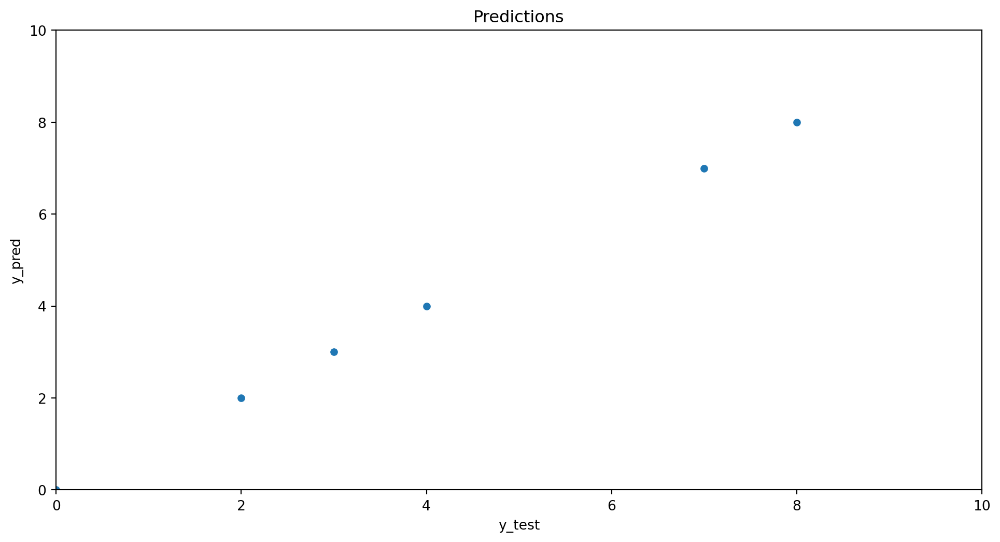
8.3 Regressão logística
para prever um valor contínuo
from sklearn.linear_model import LogisticRegression
# sem qualquer parâmetro
logisticRegr = LogisticRegression()
logisticRegr.fit(X_train, y_train)LogisticRegression()In a Jupyter environment, please rerun this cell to show the HTML representation or trust the notebook.
On GitHub, the HTML representation is unable to render, please try loading this page with nbviewer.org.
LogisticRegression()
y_pred = logisticRegr.predict(X_test)
from sklearn.metrics import r2_score
r2_score(y_test, y_pred)-0.025256923880856874import matplotlib.pyplot as plt
import seaborn as sns
plt.figure(figsize = (12,6))
sns.scatterplot(x= y_test, y= y_pred)
plt.xlim(0, 8)
plt.ylim(0, 8)
plt.title("Predictions")
plt.xlabel("y_test")
plt.ylabel("y_pred")
plt.show()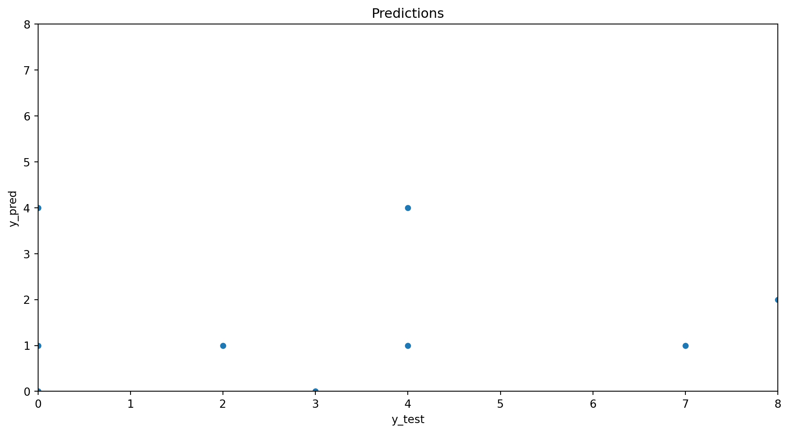
para classificar
from sklearn.datasets import load_digits
digits = load_digits()
# Vamos ver que há 1797 images (imagens 8 por 8 com uma dimensionalidade de 64)
print('Image Data Shape' , digits.data.shape)
# Print to show there are 1797 labels (integers from 0–9)
print("Label Data Shape", digits.target.shape)Image Data Shape (1797, 64)
Label Data Shape (1797,)visualizar algumas imagens
import numpy as np
import matplotlib.pyplot as plt
plt.figure(figsize=(20,4))
for index, (image, label) in enumerate(zip(digits.data[0:5], digits.target[0:5])):
plt.subplot(1, 5, index + 1)
# imshow() função dó módulo pyplot module do matplotlib para mostrar dados como imagem; i.e. num raster 2D.
plt.imshow(np.reshape(image, (8,8)), cmap=plt.cm.gray)
plt.title('Training: %i\n' % label, fontsize = 20)
plt.show()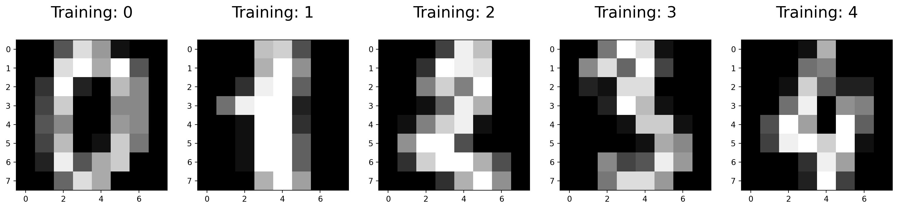
from sklearn.model_selection import train_test_split
X_train, X_test, y_train, y_test = train_test_split(digits.data, digits.target, test_size=0.25, random_state=2023)
from sklearn.linear_model import LogisticRegression
# sem qualquer parâmetro
logisticRegr = LogisticRegression()
logisticRegr.fit(X_train, y_train)LogisticRegression()In a Jupyter environment, please rerun this cell to show the HTML representation or trust the notebook.
On GitHub, the HTML representation is unable to render, please try loading this page with nbviewer.org.
LogisticRegression()
previsão da categoria/classe
# Retorna um Array NumPy
# Prevê para um único caso (imagem)
prv1 = logisticRegr.predict(X_test[0].reshape(1,-1))
prv1array([5])visualizar a imagem que foi prevista
# vamos ver a imagem
plt.figure(figsize=(20,4))
plt.imshow(np.reshape(X_test[0], (8,8)), cmap=plt.cm.gray)
plt.show()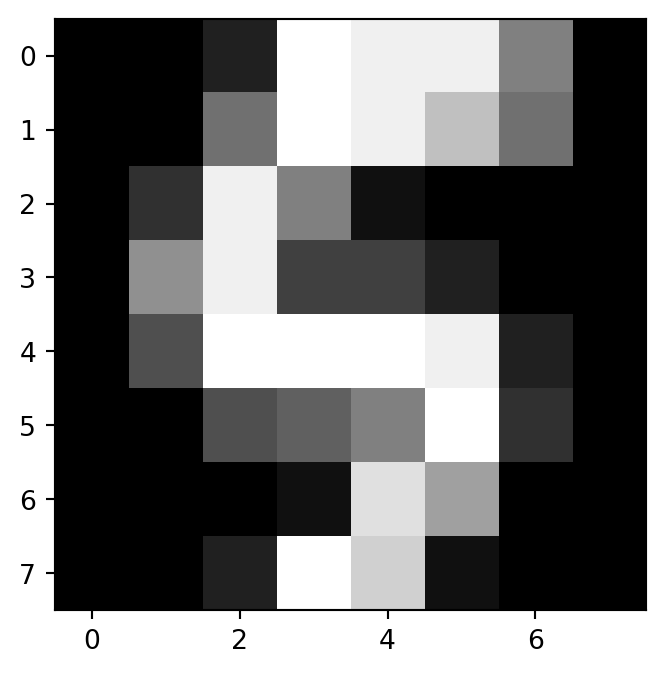
# probabilidade de que seja um 5 é de 9.93529410e-01
prob1 = logisticRegr.predict_proba(X_test[0].reshape(1,-1))
prob1array([[1.35477982e-03, 5.16378720e-05, 3.71852850e-13, 9.59922777e-04,
6.82878887e-08, 9.93529949e-01, 3.91881179e-03, 1.30613074e-04,
5.23838775e-05, 1.83393892e-06]])logisticRegr.coef_array com as previões
y_pred = logisticRegr.predict(X_test)
y_predconfusion matrix 9x9
import matplotlib.pyplot as plt
import seaborn as sns
from sklearn import metrics
#cm = metrics.confusion_matrix(y_test, y_pred)
plt.figure(figsize=(9,9))
sns.heatmap(cm, annot=True, fmt=".3f", linewidths=.5, square = True, cmap = 'Blues_r')
plt.ylabel('Actual label')
plt.xlabel('Predicted label')
all_sample_title = 'Accuracy Score: {0}'.format(metrics.accuracy_score(y_pred, y_test))
plt.title(all_sample_title, size = 15)
plt.show()8.4 Regularização
regularizações que penalizam os coeficientes grandes
8.4.1 Ridge Regression
\(Função Perda = OLS + \lambda \times slope^2\)
A recta da ridge regressioné menos inclinada dos que a recta da regressão linear, ou seja, as previsões são menos sensíveis ao predictor (processo de dessensitização dos predictores)
#Importa desta feita os datasets
from sklearn import datasets
#Load dataset de diabetes
diabetes_X,diabetes_y = datasets.load_diabetes(return_X_y = True , as_frame = True)
# Colunas que temos nos dados
diabetes_X.keys<bound method NDFrame.keys of age sex bmi bp s1 s2 s3 \
0 0.038076 0.050680 0.061696 0.021872 -0.044223 -0.034821 -0.043401
1 -0.001882 -0.044642 -0.051474 -0.026328 -0.008449 -0.019163 0.074412
2 0.085299 0.050680 0.044451 -0.005670 -0.045599 -0.034194 -0.032356
3 -0.089063 -0.044642 -0.011595 -0.036656 0.012191 0.024991 -0.036038
4 0.005383 -0.044642 -0.036385 0.021872 0.003935 0.015596 0.008142
.. ... ... ... ... ... ... ...
437 0.041708 0.050680 0.019662 0.059744 -0.005697 -0.002566 -0.028674
438 -0.005515 0.050680 -0.015906 -0.067642 0.049341 0.079165 -0.028674
439 0.041708 0.050680 -0.015906 0.017293 -0.037344 -0.013840 -0.024993
440 -0.045472 -0.044642 0.039062 0.001215 0.016318 0.015283 -0.028674
441 -0.045472 -0.044642 -0.073030 -0.081413 0.083740 0.027809 0.173816
s4 s5 s6
0 -0.002592 0.019907 -0.017646
1 -0.039493 -0.068332 -0.092204
2 -0.002592 0.002861 -0.025930
3 0.034309 0.022688 -0.009362
4 -0.002592 -0.031988 -0.046641
.. ... ... ...
437 -0.002592 0.031193 0.007207
438 0.034309 -0.018114 0.044485
439 -0.011080 -0.046883 0.015491
440 0.026560 0.044529 -0.025930
441 -0.039493 -0.004222 0.003064
[442 rows x 10 columns]>diabetes_y0 151.0
1 75.0
2 141.0
3 206.0
4 135.0
...
437 178.0
438 104.0
439 132.0
440 220.0
441 57.0
Name: target, Length: 442, dtype: float64# print data(feature)shape
diabetes_X.shape(442, 10)dividir os dados
from sklearn.model_selection import train_test_split
X_train, X_test, y_train, y_test = train_test_split(diabetes_X, diabetes_y, test_size=0.3,random_state=2510)
X_test| age | sex | bmi | bp | s1 | s2 | s3 | s4 | s5 | s6 | |
|---|---|---|---|---|---|---|---|---|---|---|
| 24 | -0.063635 | -0.044642 | 0.035829 | -0.022885 | -0.030464 | -0.018850 | -0.006584 | -0.002592 | -0.025953 | -0.054925 |
| 241 | 0.030811 | 0.050680 | -0.008362 | 0.004658 | 0.014942 | 0.027496 | 0.008142 | -0.008127 | -0.029526 | 0.056912 |
| 121 | 0.063504 | -0.044642 | 0.017506 | 0.021872 | 0.008063 | 0.021546 | -0.036038 | 0.034309 | 0.019907 | 0.011349 |
| 138 | 0.034443 | 0.050680 | 0.111276 | 0.076958 | -0.031840 | -0.033881 | -0.021311 | -0.002592 | 0.028020 | 0.073480 |
| 90 | 0.012648 | -0.044642 | -0.025607 | -0.040099 | -0.030464 | -0.045155 | 0.078093 | -0.076395 | -0.072133 | 0.011349 |
| ... | ... | ... | ... | ... | ... | ... | ... | ... | ... | ... |
| 70 | -0.001882 | -0.044642 | -0.069797 | -0.012556 | -0.000193 | -0.009143 | 0.070730 | -0.039493 | -0.062917 | 0.040343 |
| 163 | 0.016281 | 0.050680 | 0.072474 | 0.076958 | -0.008449 | 0.005575 | -0.006584 | -0.002592 | -0.023647 | 0.061054 |
| 328 | -0.038207 | -0.044642 | 0.067085 | -0.060756 | -0.029088 | -0.023234 | -0.010266 | -0.002592 | -0.001496 | 0.019633 |
| 333 | 0.027178 | 0.050680 | -0.006206 | 0.028758 | -0.016704 | -0.001627 | -0.058127 | 0.034309 | 0.029297 | 0.032059 |
| 181 | 0.048974 | -0.044642 | -0.042852 | -0.053870 | 0.045213 | 0.050042 | 0.033914 | -0.002592 | -0.025953 | -0.063209 |
133 rows × 10 columns
Na função de perda \(\alpha\) é o parâmetro que precisamos selecionar. Um valor \(\alpha\) baixo pode levar a um ajuste excessivo, enquanto um valor \(\alpha\) alto pode levar a um ajuste insuficiente.
from sklearn.linear_model import Ridge
# instancia o modelo de regressão Ridge
# com um valor alfa
model_ridge = Ridge(alpha=0.01)
model_ridge.fit(X_train, y_train)
y_pred_ridgetrain= model_ridge.predict(X_train)
y_pred_ridgetest = model_ridge.predict(X_test)
y_pred_ridgetest[0:3]array([158.83215558, 121.16021195, 187.58510908])y_test[0:3]24 184.0
241 177.0
121 173.0
Name: target, dtype: float64from sklearn.metrics import mean_squared_error, r2_score
print('RMSE nos dados de Treino: {}' .format(np.sqrt(mean_squared_error(y_train,y_pred_ridgetrain))))
print('R2 nos dados de Treino: {}' .format(r2_score(y_train, y_pred_ridgetrain)))
print('RMSE nos dados de Teste: {}' .format(np.sqrt(mean_squared_error(y_test,y_pred_ridgetest))))
print('R2 nos dados de Teste: {}' .format(r2_score(y_test, y_pred_ridgetest)))RMSE nos dados de Treino: 53.83174171338626
R2 nos dados de Treino: 0.5019381528297013
RMSE nos dados de Teste: 54.68294795042933
R2 nos dados de Teste: 0.5032327253095996import matplotlib.pyplot as plt
import seaborn as sns
plt.figure(figsize = (12,6))
sns.scatterplot(x= y_test, y= y_pred_ridgetest)
plt.xlim(0, 400)
plt.ylim(0, 400)
plt.title("Predictions")
plt.xlabel("y_test")
plt.ylabel("y_pred")
plt.show()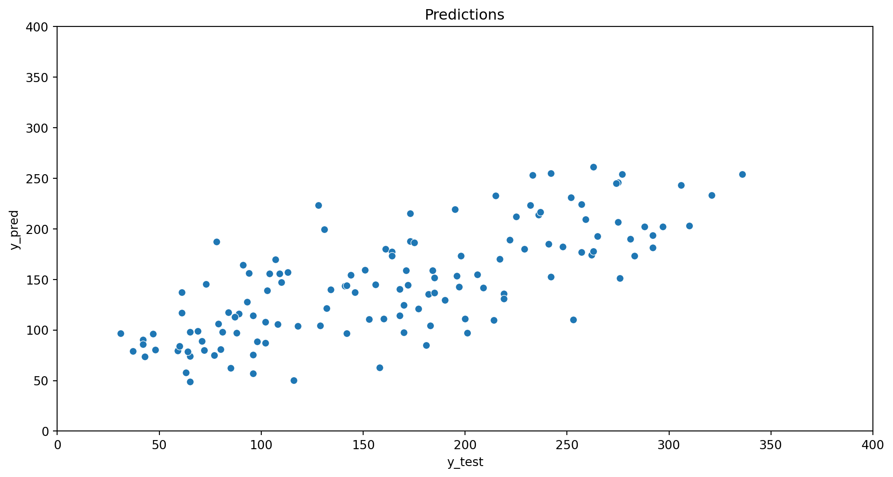
Exemplo com ficheiro Hitters
datadir ="data\\"
filename = "Hitters.csv"
df = pd.read_csv(f"{datadir}{filename}", index_col=0, verbose = False, encoding='latin-1')
df.head()C:\Users\bruno.lima\AppData\Local\Temp\ipykernel_19764\2911689644.py:4: FutureWarning: The 'verbose' keyword in pd.read_csv is deprecated and will be removed in a future version.
df = pd.read_csv(f"{datadir}{filename}", index_col=0, verbose = False, encoding='latin-1')| AtBat | Hits | HmRun | Runs | RBI | Walks | Years | CAtBat | CHits | CHmRun | CRuns | CRBI | CWalks | League | Division | PutOuts | Assists | Errors | Salary | NewLeague | |
|---|---|---|---|---|---|---|---|---|---|---|---|---|---|---|---|---|---|---|---|---|
| -Andy Allanson | 293 | 66 | 1 | 30 | 29 | 14 | 1 | 293 | 66 | 1 | 30 | 29 | 14 | A | E | 446 | 33 | 20 | NaN | A |
| -Alan Ashby | 315 | 81 | 7 | 24 | 38 | 39 | 14 | 3449 | 835 | 69 | 321 | 414 | 375 | N | W | 632 | 43 | 10 | 475.0 | N |
| -Alvin Davis | 479 | 130 | 18 | 66 | 72 | 76 | 3 | 1624 | 457 | 63 | 224 | 266 | 263 | A | W | 880 | 82 | 14 | 480.0 | A |
| -Andre Dawson | 496 | 141 | 20 | 65 | 78 | 37 | 11 | 5628 | 1575 | 225 | 828 | 838 | 354 | N | E | 200 | 11 | 3 | 500.0 | N |
| -Andres Galarraga | 321 | 87 | 10 | 39 | 42 | 30 | 2 | 396 | 101 | 12 | 48 | 46 | 33 | N | E | 805 | 40 | 4 | 91.5 | N |
df.reset_index()| index | AtBat | Hits | HmRun | Runs | RBI | Walks | Years | CAtBat | CHits | ... | CRuns | CRBI | CWalks | League | Division | PutOuts | Assists | Errors | Salary | NewLeague | |
|---|---|---|---|---|---|---|---|---|---|---|---|---|---|---|---|---|---|---|---|---|---|
| 0 | -Andy Allanson | 293 | 66 | 1 | 30 | 29 | 14 | 1 | 293 | 66 | ... | 30 | 29 | 14 | A | E | 446 | 33 | 20 | NaN | A |
| 1 | -Alan Ashby | 315 | 81 | 7 | 24 | 38 | 39 | 14 | 3449 | 835 | ... | 321 | 414 | 375 | N | W | 632 | 43 | 10 | 475.0 | N |
| 2 | -Alvin Davis | 479 | 130 | 18 | 66 | 72 | 76 | 3 | 1624 | 457 | ... | 224 | 266 | 263 | A | W | 880 | 82 | 14 | 480.0 | A |
| 3 | -Andre Dawson | 496 | 141 | 20 | 65 | 78 | 37 | 11 | 5628 | 1575 | ... | 828 | 838 | 354 | N | E | 200 | 11 | 3 | 500.0 | N |
| 4 | -Andres Galarraga | 321 | 87 | 10 | 39 | 42 | 30 | 2 | 396 | 101 | ... | 48 | 46 | 33 | N | E | 805 | 40 | 4 | 91.5 | N |
| ... | ... | ... | ... | ... | ... | ... | ... | ... | ... | ... | ... | ... | ... | ... | ... | ... | ... | ... | ... | ... | ... |
| 317 | -Willie McGee | 497 | 127 | 7 | 65 | 48 | 37 | 5 | 2703 | 806 | ... | 379 | 311 | 138 | N | E | 325 | 9 | 3 | 700.0 | N |
| 318 | -Willie Randolph | 492 | 136 | 5 | 76 | 50 | 94 | 12 | 5511 | 1511 | ... | 897 | 451 | 875 | A | E | 313 | 381 | 20 | 875.0 | A |
| 319 | -Wayne Tolleson | 475 | 126 | 3 | 61 | 43 | 52 | 6 | 1700 | 433 | ... | 217 | 93 | 146 | A | W | 37 | 113 | 7 | 385.0 | A |
| 320 | -Willie Upshaw | 573 | 144 | 9 | 85 | 60 | 78 | 8 | 3198 | 857 | ... | 470 | 420 | 332 | A | E | 1314 | 131 | 12 | 960.0 | A |
| 321 | -Willie Wilson | 631 | 170 | 9 | 77 | 44 | 31 | 11 | 4908 | 1457 | ... | 775 | 357 | 249 | A | W | 408 | 4 | 3 | 1000.0 | A |
322 rows × 21 columns
# Vamos descobrir em que colunas há valores em falta
[col for col in df.columns if df[col].isnull().sum()>0]
# só a coluna salary tem valores em falta
df.dropna(inplace = True)# vamos ver que colunas são do tipo Object
qual_vars = [col for col in df.columns if df[col].dtype == 'object']
print(qual_vars)
# e criar variáveis dummy para as nossas variáveis categóricas
df = pd.get_dummies(df,columns= qual_vars,drop_first=True)
df.head()['League', 'Division', 'NewLeague']| AtBat | Hits | HmRun | Runs | RBI | Walks | Years | CAtBat | CHits | CHmRun | CRuns | CRBI | CWalks | PutOuts | Assists | Errors | Salary | League_N | Division_W | NewLeague_N | |
|---|---|---|---|---|---|---|---|---|---|---|---|---|---|---|---|---|---|---|---|---|
| -Alan Ashby | 315 | 81 | 7 | 24 | 38 | 39 | 14 | 3449 | 835 | 69 | 321 | 414 | 375 | 632 | 43 | 10 | 475.0 | True | True | True |
| -Alvin Davis | 479 | 130 | 18 | 66 | 72 | 76 | 3 | 1624 | 457 | 63 | 224 | 266 | 263 | 880 | 82 | 14 | 480.0 | False | True | False |
| -Andre Dawson | 496 | 141 | 20 | 65 | 78 | 37 | 11 | 5628 | 1575 | 225 | 828 | 838 | 354 | 200 | 11 | 3 | 500.0 | True | False | True |
| -Andres Galarraga | 321 | 87 | 10 | 39 | 42 | 30 | 2 | 396 | 101 | 12 | 48 | 46 | 33 | 805 | 40 | 4 | 91.5 | True | False | True |
| -Alfredo Griffin | 594 | 169 | 4 | 74 | 51 | 35 | 11 | 4408 | 1133 | 19 | 501 | 336 | 194 | 282 | 421 | 25 | 750.0 | False | True | False |
# Separamos a coluna target das outras
X = df.drop('Salary',axis = 1)
y = df['Salary']
from sklearn.preprocessing import StandardScaler
# Como vemos nas colunas grandes diferenças de escala vamos standardizar
scaler = StandardScaler()
X = scaler.fit_transform(X)
from sklearn.model_selection import train_test_split
X_train, X_test, y_train, y_test = train_test_split(X, y, test_size=0.3,random_state=2510)
print(X_train.shape)
print(y_test.shape)(184, 19)
(79,)from sklearn.linear_model import Ridge
# instanciar o modelo de regressão Ridge
# com um valor alfa
model_ridge = Ridge(alpha=0.01)
model_ridge.fit(X_train, y_train) Ridge(alpha=0.01)In a Jupyter environment, please rerun this cell to show the HTML representation or trust the notebook.
On GitHub, the HTML representation is unable to render, please try loading this page with nbviewer.org.
Ridge(alpha=0.01)
ver os primeiros resultados
y_pred_ridgetrain= model_ridge.predict(X_train)
y_pred_ridgetest= model_ridge.predict(X_test)
y_pred_ridgetest[0:3]
y_test[0:3]-Frank White 750.0
-Marty Barrett 575.0
-Argenis Salazar 100.0
Name: Salary, dtype: float64avaliar o modelo
from sklearn.metrics import mean_squared_error, r2_score
print('MSE nos dados de Treino: {}' .format(np.sqrt(mean_squared_error(y_train,y_pred_ridgetrain))))
print('R2 nos dados de Treino: {}' .format(r2_score(y_train, y_pred_ridgetrain)))
print('MSE nos dados de Teste: {}' .format(np.sqrt(mean_squared_error(y_test,y_pred_ridgetest))))
print('R2 nos dados de Teste: {}' .format(r2_score(y_test, y_pred_ridgetest)))MSE nos dados de Treino: 300.46906944485323
R2 nos dados de Treino: 0.5539698178486953
MSE nos dados de Teste: 344.04002446717914
R2 nos dados de Teste: 0.4164667980776531visualizar a comparação do previsto com o real
import matplotlib.pyplot as plt
import seaborn as sns
plt.figure(figsize = (12,6))
sns.scatterplot(x= y_test, y= y_pred_ridgetest)
plt.xlim(0, 1000)
plt.ylim(0, 1000)
plt.title("Predictions")
plt.xlabel("y_test")
plt.ylabel("y_pred")
plt.show()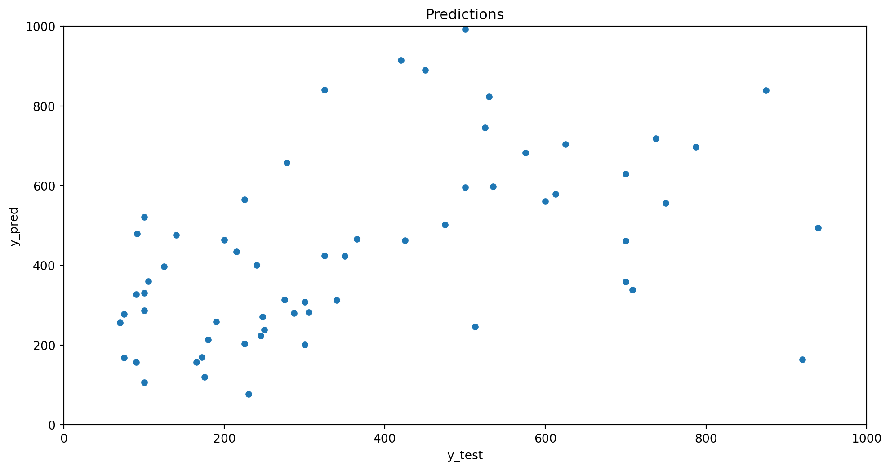
8.4.1.1 explorar o alpha
array([1.00000000e-02, 1.32194115e-02, 1.74752840e-02, 2.31012970e-02,
3.05385551e-02, 4.03701726e-02, 5.33669923e-02, 7.05480231e-02,
9.32603347e-02, 1.23284674e-01, 1.62975083e-01, 2.15443469e-01,
2.84803587e-01, 3.76493581e-01, 4.97702356e-01, 6.57933225e-01,
8.69749003e-01, 1.14975700e+00, 1.51991108e+00, 2.00923300e+00,
2.65608778e+00, 3.51119173e+00, 4.64158883e+00, 6.13590727e+00,
8.11130831e+00, 1.07226722e+01, 1.41747416e+01, 1.87381742e+01,
2.47707636e+01, 3.27454916e+01, 4.32876128e+01, 5.72236766e+01,
7.56463328e+01, 1.00000000e+02, 1.32194115e+02, 1.74752840e+02,
2.31012970e+02, 3.05385551e+02, 4.03701726e+02, 5.33669923e+02,
7.05480231e+02, 9.32603347e+02, 1.23284674e+03, 1.62975083e+03,
2.15443469e+03, 2.84803587e+03, 3.76493581e+03, 4.97702356e+03,
6.57933225e+03, 8.69749003e+03, 1.14975700e+04, 1.51991108e+04,
2.00923300e+04, 2.65608778e+04, 3.51119173e+04, 4.64158883e+04,
6.13590727e+04, 8.11130831e+04, 1.07226722e+05, 1.41747416e+05,
1.87381742e+05, 2.47707636e+05, 3.27454916e+05, 4.32876128e+05,
5.72236766e+05, 7.56463328e+05, 1.00000000e+06, 1.32194115e+06,
1.74752840e+06, 2.31012970e+06, 3.05385551e+06, 4.03701726e+06,
5.33669923e+06, 7.05480231e+06, 9.32603347e+06, 1.23284674e+07,
1.62975083e+07, 2.15443469e+07, 2.84803587e+07, 3.76493581e+07,
4.97702356e+07, 6.57933225e+07, 8.69749003e+07, 1.14975700e+08,
1.51991108e+08, 2.00923300e+08, 2.65608778e+08, 3.51119173e+08,
4.64158883e+08, 6.13590727e+08, 8.11130831e+08, 1.07226722e+09,
1.41747416e+09, 1.87381742e+09, 2.47707636e+09, 3.27454916e+09,
4.32876128e+09, 5.72236766e+09, 7.56463328e+09, 1.00000000e+10])vizualizar o valor dos coeficientes para cada alpha. Quanto maior é o alpha menor é o valor dos coeficientes
| 0 | 1 | 2 | 3 | 4 | 5 | 6 | 7 | 8 | 9 | 10 | 11 | 12 | 13 | 14 | 15 | 16 | 17 | 18 | |
|---|---|---|---|---|---|---|---|---|---|---|---|---|---|---|---|---|---|---|---|
| 3.274549e+09 | 0.000014 | 0.000016 | 0.000012 | 0.000015 | 0.000016 | 0.000016 | 0.000014 | 0.000019 | 0.000020 | 0.000019 | 0.000020 | 0.000021 | 0.000018 | 0.000011 | 9.198538e-07 | -1.953073e-07 | -5.164761e-07 | -0.000007 | -1.025022e-07 |
| 4.328761e+09 | 0.000011 | 0.000012 | 0.000009 | 0.000011 | 0.000012 | 0.000012 | 0.000011 | 0.000014 | 0.000015 | 0.000014 | 0.000015 | 0.000016 | 0.000013 | 0.000008 | 6.958357e-07 | -1.477427e-07 | -3.906955e-07 | -0.000005 | -7.753936e-08 |
| 5.722368e+09 | 0.000008 | 0.000009 | 0.000007 | 0.000009 | 0.000009 | 0.000009 | 0.000008 | 0.000011 | 0.000011 | 0.000011 | 0.000012 | 0.000012 | 0.000010 | 0.000006 | 5.263742e-07 | -1.117620e-07 | -2.955470e-07 | -0.000004 | -5.865581e-08 |
| 7.564633e+09 | 0.000006 | 0.000007 | 0.000005 | 0.000007 | 0.000007 | 0.000007 | 0.000006 | 0.000008 | 0.000009 | 0.000008 | 0.000009 | 0.000009 | 0.000008 | 0.000005 | 3.981828e-07 | -8.454381e-08 | -2.235706e-07 | -0.000003 | -4.437104e-08 |
| 1.000000e+10 | 0.000005 | 0.000005 | 0.000004 | 0.000005 | 0.000005 | 0.000005 | 0.000005 | 0.000006 | 0.000007 | 0.000006 | 0.000007 | 0.000007 | 0.000006 | 0.000004 | 3.012107e-07 | -6.395428e-08 | -1.691230e-07 | -0.000002 | -3.356510e-08 |
import warnings
warnings.filterwarnings("ignore", "is_categorical_dtype")
warnings.filterwarnings("ignore", "use_inf_as_na")
plt.figure(figsize = (16,8))
sns.lineplot(data = tmp, dashes=False)
plt.axhline(y = 0,linestyle = 'dashed',lw = 0.1,color = 'black')
plt.xscale('log')
plt.xticks(list_alpha)
plt.ylabel('Coeffients',fontsize = 14)
plt.xlabel('Alpha')
plt.legend(loc='right')
plt.show()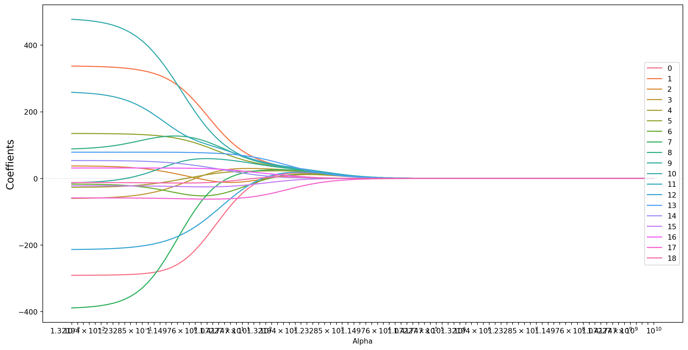
alguns alphas
print(list_alpha[0])
print(list_alpha[3])
print(list_alpha[97])
print(list_alpha[99])0.01
0.023101297000831605
5722367659.35022
10000000000.0# para um valor baixo de alpha os coeficientes são elevados
print(coeff_matrix[list_alpha[8]])
# para um valor elevado de alpha os coeficientes são próximos de zero
# mas não realmente zero
print(coeff_matrix[list_alpha[90]])[-289.5186532702079, 332.67911842340266, 34.77944193671617, -55.84478229633608, -24.166567449874282, 133.80205477153825, -19.909741728270834, -369.7426875016733, 100.54237339882312, -3.614039922952728, 454.2056856600365, 241.57214343743524, -209.5884504988336, 78.76557723286052, 53.01946396095578, -22.42328507878044, 31.27853944423717, -58.67555869272159, -12.638577929628285]
[5.763318248704298e-05, 6.40427770922997e-05, 5.007915350288836e-05, 6.129576852892078e-05, 6.561689194262846e-05, 6.480083916119167e-05, 5.849247359810473e-05, 7.681124525639192e-05, 8.013609785207737e-05, 7.663536669557499e-05, 8.214613025072635e-05, 8.277213810215086e-05, 7.150981326993898e-05, 4.386760495701926e-05, 3.71346122622258e-06, -7.884609239667501e-07, -2.08500226533533e-06, -2.810549748199536e-05, -4.13788785581499e-07]# linalg.norm(x, ord=None, axis=None, keepdims=False)
# Calcula a norma matricial ou vetorial, dependendo do ord, 8 normas diferentes
# Quando ord é None para um vector x retorna a 2-norm
list_l2_norm = []
for alpha in list_alpha:
list_l2_norm.append(np.linalg.norm(coeff_matrix[alpha]))
print(list_l2_norm[0])
print(list_l2_norm[-1])858.0516634402755
2.0720439677307483e-05plt.figure(figsize = (14,6))
plt.plot(list_alpha,list_l2_norm)
plt.xlabel('Alpha')
plt.ylabel('L2 Norm')
plt.xlim(0,100)(0.0, 100.0)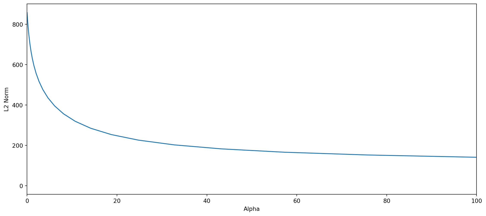
8.4.1.2 seleccionar o melhor \(\alpha\)
[14371397.402950881,
14371254.68811181,
14371066.701396009,
14370819.366358213,
14370494.440462416]# visualização dos scores
sns.lineplot(x=list_alpha,y=validation_score)
plt.xscale('log')
plt.show()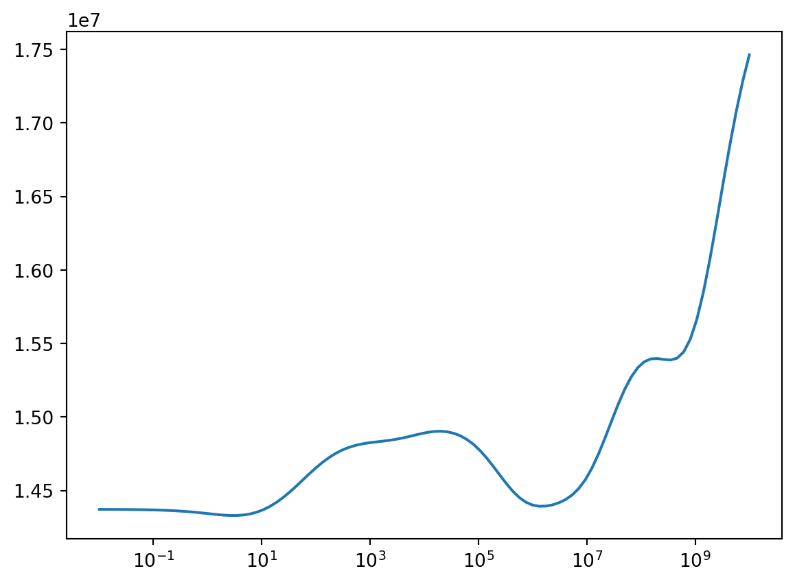
ver valores por posição
np.argmin(validation_score)
validation_score[69]14401641.44770242escolhido o score aplicamos o respectivo alpha
model_ridge = Ridge(alpha=validation_score[69])
model_ridge.fit(X_train, y_train)
y_pred_ridgetrain= model_ridge.predict(X_train)
y_pred_ridgetest= model_ridge.predict(X_test)
y_pred_ridgetest[0:3]array([304.75916192, 594.01215749, 782.30716378])# reparem que como estamos a partir/split com seed diferente
# temos diferentes elementos no conjunto de teste
y_test[0:3]-Ron Roenicke 191.000
-Keith Moreland 1043.333
-Phil Garner 450.000
Name: Salary, dtype: float648.4.2 Lasso Regression
\(Função Perda = OLS + \alpha \times \sum|\beta|)\)
Exemplo com dataset do Scikit
from sklearn.model_selection import train_test_split
X_train, X_test, y_train, y_test = train_test_split(diabetes_X, diabetes_y, test_size=0.3,random_state=2510)
from sklearn.linear_model import Lasso
# instancia o modelo de regressão Lasso
# com um valor alfa
model_lasso = Lasso(alpha=0.01)
model_lasso.fit(X_train, y_train) Lasso(alpha=0.01)In a Jupyter environment, please rerun this cell to show the HTML representation or trust the notebook.
On GitHub, the HTML representation is unable to render, please try loading this page with nbviewer.org.
Lasso(alpha=0.01)
y_pred_lassotrain = model_lasso.predict(X_train)
y_pred_lassotest = model_lasso.predict(X_test)
y_pred_lassotest[:5]
y_test[:5]24 184.0
241 177.0
121 173.0
138 336.0
90 98.0
Name: target, dtype: float64from sklearn.metrics import mean_squared_error, r2_score
print('MSE nos dados de Treino: {}' .format(np.sqrt(mean_squared_error(y_train,y_pred_lassotrain))))
print('R2 nos dados de Treino: {}' .format(r2_score(y_train, y_pred_lassotrain)))
print('MSE nos dados de Teste: {}' .format(np.sqrt(mean_squared_error(y_test,y_pred_lassotest))))
print('R2 nos dados de Teste: {}' .format(r2_score(y_test, y_pred_lassotest)))MSE nos dados de Treino: 53.834764417795725
R2 nos dados de Treino: 0.5018822179496036
MSE nos dados de Teste: 54.71440186020355
R2 nos dados de Teste: 0.5026610748228949import matplotlib.pyplot as plt
import seaborn as sns
plt.figure(figsize = (12,6))
sns.scatterplot(x= y_test, y= y_pred_lassotest)
plt.xlim(0, 400)
plt.ylim(0, 400)
plt.title("Predictions")
plt.xlabel("y_test")
plt.ylabel("y_pred")
plt.show()8.4.2.1 explorar o \(\alpha\)
df.head()| AtBat | Hits | HmRun | Runs | RBI | Walks | Years | CAtBat | CHits | CHmRun | CRuns | CRBI | CWalks | PutOuts | Assists | Errors | Salary | League_N | Division_W | NewLeague_N | |
|---|---|---|---|---|---|---|---|---|---|---|---|---|---|---|---|---|---|---|---|---|
| -Alan Ashby | 315 | 81 | 7 | 24 | 38 | 39 | 14 | 3449 | 835 | 69 | 321 | 414 | 375 | 632 | 43 | 10 | 475.0 | True | True | True |
| -Alvin Davis | 479 | 130 | 18 | 66 | 72 | 76 | 3 | 1624 | 457 | 63 | 224 | 266 | 263 | 880 | 82 | 14 | 480.0 | False | True | False |
| -Andre Dawson | 496 | 141 | 20 | 65 | 78 | 37 | 11 | 5628 | 1575 | 225 | 828 | 838 | 354 | 200 | 11 | 3 | 500.0 | True | False | True |
| -Andres Galarraga | 321 | 87 | 10 | 39 | 42 | 30 | 2 | 396 | 101 | 12 | 48 | 46 | 33 | 805 | 40 | 4 | 91.5 | True | False | True |
| -Alfredo Griffin | 594 | 169 | 4 | 74 | 51 | 35 | 11 | 4408 | 1133 | 19 | 501 | 336 | 194 | 282 | 421 | 25 | 750.0 | False | True | False |
# Separamos a coluna target das outras
X = df.drop('Salary',axis = 1)
y = df['Salary']from sklearn.preprocessing import StandardScaler
# Como vemos nas colunas grandes diferenças de escala vamos standardizar
scaler = StandardScaler()
X = scaler.fit_transform(X)
from sklearn.model_selection import train_test_split
X_train, X_test, y_train, y_test = train_test_split(X, y, test_size=0.2,random_state=2510)
print(X_train.shape)
print(y_test.shape)(210, 19)
(53,)C:\Users\bruno.lima\AppData\Roaming\Python\Python312\site-packages\sklearn\linear_model\_coordinate_descent.py:697: ConvergenceWarning: Objective did not converge. You might want to increase the number of iterations, check the scale of the features or consider increasing regularisation. Duality gap: 9.182e+06, tolerance: 5.332e+03
model = cd_fast.enet_coordinate_descent(
C:\Users\bruno.lima\AppData\Roaming\Python\Python312\site-packages\sklearn\linear_model\_coordinate_descent.py:697: ConvergenceWarning: Objective did not converge. You might want to increase the number of iterations, check the scale of the features or consider increasing regularisation. Duality gap: 8.172e+06, tolerance: 5.332e+03
model = cd_fast.enet_coordinate_descent(
C:\Users\bruno.lima\AppData\Roaming\Python\Python312\site-packages\sklearn\linear_model\_coordinate_descent.py:697: ConvergenceWarning: Objective did not converge. You might want to increase the number of iterations, check the scale of the features or consider increasing regularisation. Duality gap: 6.794e+06, tolerance: 5.332e+03
model = cd_fast.enet_coordinate_descent(
C:\Users\bruno.lima\AppData\Roaming\Python\Python312\site-packages\sklearn\linear_model\_coordinate_descent.py:697: ConvergenceWarning: Objective did not converge. You might want to increase the number of iterations, check the scale of the features or consider increasing regularisation. Duality gap: 5.458e+06, tolerance: 5.332e+03
model = cd_fast.enet_coordinate_descent(
C:\Users\bruno.lima\AppData\Roaming\Python\Python312\site-packages\sklearn\linear_model\_coordinate_descent.py:697: ConvergenceWarning: Objective did not converge. You might want to increase the number of iterations, check the scale of the features or consider increasing regularisation. Duality gap: 4.219e+06, tolerance: 5.332e+03
model = cd_fast.enet_coordinate_descent(
C:\Users\bruno.lima\AppData\Roaming\Python\Python312\site-packages\sklearn\linear_model\_coordinate_descent.py:697: ConvergenceWarning: Objective did not converge. You might want to increase the number of iterations, check the scale of the features or consider increasing regularisation. Duality gap: 2.984e+06, tolerance: 5.332e+03
model = cd_fast.enet_coordinate_descent(
C:\Users\bruno.lima\AppData\Roaming\Python\Python312\site-packages\sklearn\linear_model\_coordinate_descent.py:697: ConvergenceWarning: Objective did not converge. You might want to increase the number of iterations, check the scale of the features or consider increasing regularisation. Duality gap: 1.852e+06, tolerance: 5.332e+03
model = cd_fast.enet_coordinate_descent(
C:\Users\bruno.lima\AppData\Roaming\Python\Python312\site-packages\sklearn\linear_model\_coordinate_descent.py:697: ConvergenceWarning: Objective did not converge. You might want to increase the number of iterations, check the scale of the features or consider increasing regularisation. Duality gap: 9.255e+05, tolerance: 5.332e+03
model = cd_fast.enet_coordinate_descent(
C:\Users\bruno.lima\AppData\Roaming\Python\Python312\site-packages\sklearn\linear_model\_coordinate_descent.py:697: ConvergenceWarning: Objective did not converge. You might want to increase the number of iterations, check the scale of the features or consider increasing regularisation. Duality gap: 2.872e+05, tolerance: 5.332e+03
model = cd_fast.enet_coordinate_descent(
C:\Users\bruno.lima\AppData\Roaming\Python\Python312\site-packages\sklearn\linear_model\_coordinate_descent.py:697: ConvergenceWarning: Objective did not converge. You might want to increase the number of iterations, check the scale of the features or consider increasing regularisation. Duality gap: 1.493e+05, tolerance: 5.332e+03
model = cd_fast.enet_coordinate_descent(
C:\Users\bruno.lima\AppData\Roaming\Python\Python312\site-packages\sklearn\linear_model\_coordinate_descent.py:697: ConvergenceWarning: Objective did not converge. You might want to increase the number of iterations, check the scale of the features or consider increasing regularisation. Duality gap: 9.225e+04, tolerance: 5.332e+03
model = cd_fast.enet_coordinate_descent(
C:\Users\bruno.lima\AppData\Roaming\Python\Python312\site-packages\sklearn\linear_model\_coordinate_descent.py:697: ConvergenceWarning: Objective did not converge. You might want to increase the number of iterations, check the scale of the features or consider increasing regularisation. Duality gap: 5.792e+04, tolerance: 5.332e+03
model = cd_fast.enet_coordinate_descent(
C:\Users\bruno.lima\AppData\Roaming\Python\Python312\site-packages\sklearn\linear_model\_coordinate_descent.py:697: ConvergenceWarning: Objective did not converge. You might want to increase the number of iterations, check the scale of the features or consider increasing regularisation. Duality gap: 3.740e+04, tolerance: 5.332e+03
model = cd_fast.enet_coordinate_descent(
C:\Users\bruno.lima\AppData\Roaming\Python\Python312\site-packages\sklearn\linear_model\_coordinate_descent.py:697: ConvergenceWarning: Objective did not converge. You might want to increase the number of iterations, check the scale of the features or consider increasing regularisation. Duality gap: 2.515e+04, tolerance: 5.332e+03
model = cd_fast.enet_coordinate_descent(
C:\Users\bruno.lima\AppData\Roaming\Python\Python312\site-packages\sklearn\linear_model\_coordinate_descent.py:697: ConvergenceWarning: Objective did not converge. You might want to increase the number of iterations, check the scale of the features or consider increasing regularisation. Duality gap: 1.760e+04, tolerance: 5.332e+03
model = cd_fast.enet_coordinate_descent(
C:\Users\bruno.lima\AppData\Roaming\Python\Python312\site-packages\sklearn\linear_model\_coordinate_descent.py:697: ConvergenceWarning: Objective did not converge. You might want to increase the number of iterations, check the scale of the features or consider increasing regularisation. Duality gap: 1.099e+04, tolerance: 5.332e+03
model = cd_fast.enet_coordinate_descent(tmp = pd.DataFrame(coeff_matrix_lasso).T
tmp.index = list_alpha
tmp.head()| 0 | 1 | 2 | 3 | 4 | 5 | 6 | 7 | 8 | 9 | 10 | 11 | 12 | 13 | 14 | 15 | 16 | 17 | 18 | |
|---|---|---|---|---|---|---|---|---|---|---|---|---|---|---|---|---|---|---|---|
| 0.010000 | -286.905007 | 331.363096 | 36.212359 | -57.357808 | -25.658648 | 133.787447 | -14.313048 | -422.215279 | 133.673334 | -4.578178 | 464.460502 | 246.073678 | -208.802960 | 78.639945 | 54.350452 | -22.467425 | 31.583507 | -58.365877 | -12.672573 |
| 0.013219 | -286.950122 | 331.325695 | 36.091031 | -57.257930 | -25.528647 | 133.747959 | -14.398744 | -420.990800 | 132.935083 | -4.435307 | 464.206011 | 245.764342 | -208.778380 | 78.644615 | 54.304079 | -22.452758 | 31.554027 | -58.363511 | -12.643337 |
| 0.017475 | -287.009869 | 331.275922 | 35.930298 | -57.125588 | -25.356432 | 133.695761 | -14.512163 | -419.372611 | 131.963418 | -4.244520 | 463.867405 | 245.352140 | -208.745736 | 78.650806 | 54.242814 | -22.433398 | 31.515092 | -58.360387 | -12.604741 |
| 0.023101 | -287.089063 | 331.210178 | 35.717682 | -56.950581 | -25.128615 | 133.626802 | -14.662262 | -417.232465 | 130.679408 | -3.991625 | 463.419197 | 244.805989 | -208.702686 | 78.659004 | 54.161818 | -22.407810 | 31.463628 | -58.356260 | -12.553732 |
| 0.030539 | -287.193575 | 331.122512 | 35.436185 | -56.718727 | -24.827025 | 133.535567 | -14.860641 | -414.406159 | 128.989613 | -3.654757 | 462.823461 | 244.079779 | -208.645293 | 78.669850 | 54.054836 | -22.374038 | 31.395662 | -58.350806 | -12.486383 |
<matplotlib.legend.Legend at 0x21e5ffbb1d0>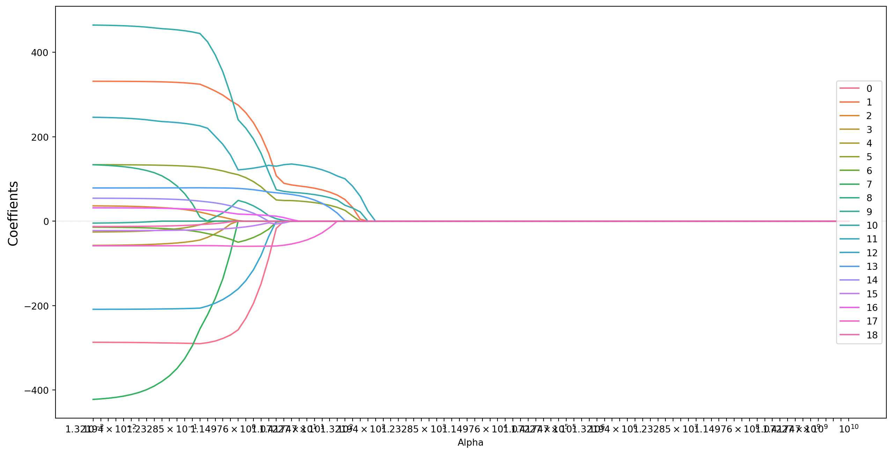
# para valores pequenos de alpha os coeficientes são grandes
print(coeff_matrix_lasso[list_alpha[8]])
# para valores maiores de alpha alguns coeficientes são zero
print(coeff_matrix_lasso[list_alpha[30]])[-288.06252906937283, 330.36981199887316, 33.06222643992299, -54.759037031180235, -22.284629558490636, 132.76311903093176, -16.525200498348504, -390.659230557264, 114.8268814172216, -0.8084173075280119, 457.7814835607485, 237.95136546687914, -208.14987606522263, 78.76080852606074, 53.1542878424637, -22.089840987640706, 30.823239242661334, -58.30463802012498, -11.918959657362254]
[0.0, 74.03594663563689, 0.0, 0.0, 0.0, 41.19913426013344, 0.0, 0.0, 0.0, 0.0, 59.78901166959339, 121.68559725913998, 0.0, 42.406428354257805, 0.0, -0.0, 0.0, -27.734808911994236, 0.0]# para valores suficientemente grandes de alpha
# são todos encolhidos até ao zero
# ao contrário do que sucedia com o Ridge em que se
# aproximavam mas nunca eram mesmo zero
print(coeff_matrix_lasso[list_alpha[90]])[0.0, 0.0, 0.0, 0.0, 0.0, 0.0, 0.0, 0.0, 0.0, 0.0, 0.0, 0.0, 0.0, 0.0, 0.0, -0.0, -0.0, -0.0, -0.0]8.4.3 Elastic Net Regression
\(Função Perda = OLS + \alpha_1 \times \sum\beta^2 + \alpha_2 \times \sum|\beta|)\)
ElasticNet combina as propriedades da regressão Ridge e Lasso. Funciona penalizando o modelo usando a norma l2 e a norma l1.
No scikit-learn, um modelo de regressão ElasticNet é construído usando a classe ElasticNet.
from sklearn.model_selection import train_test_split
X_train, X_test, y_train, y_test = train_test_split(diabetes_X, diabetes_y, test_size=0.3,random_state=2510)
from sklearn.linear_model import ElasticNet
# instancia o modelo de regressão ElasticNet
# com um valor alfa
model_elnet = ElasticNet(alpha = 0.01)
model_elnet.fit(X_train, y_train) ElasticNet(alpha=0.01)In a Jupyter environment, please rerun this cell to show the HTML representation or trust the notebook.
On GitHub, the HTML representation is unable to render, please try loading this page with nbviewer.org.
ElasticNet(alpha=0.01)
y_pred_elnettrain= model_elnet.predict(X_train)
y_pred_elnettest= model_elnet.predict(X_test)
y_pred_elnettest[:5]
print()
y_test[:5]24 184.0
241 177.0
121 173.0
138 336.0
90 98.0
Name: target, dtype: float64from sklearn.metrics import mean_squared_error, r2_score
print('MSE nos dados de Treino: {}' .format(np.sqrt(mean_squared_error(y_train,y_pred_elnettrain))))
print('R2 nos dados de Treino: {}' .format(r2_score(y_train, y_pred_elnettrain)))
print('MSE nos dados de Teste: {}' .format(np.sqrt(mean_squared_error(y_test,y_pred_elnettest))))
print('R2 nos dados de Teste: {}' .format(r2_score(y_test, y_pred_elnettest)))MSE nos dados de Treino: 60.662341933166346
R2 nos dados de Treino: 0.36752297059357386
MSE nos dados de Teste: 62.49579343732485
R2 nos dados de Teste: 0.3511404335037812import matplotlib.pyplot as plt
import seaborn as sns
plt.figure(figsize = (12,6))
sns.scatterplot(x= y_test, y= y_pred_elnettest)
plt.xlim(0, 400)
plt.ylim(0, 400)
plt.title("Predictions")
plt.xlabel("y_test")
plt.ylabel("y_pred")
plt.show()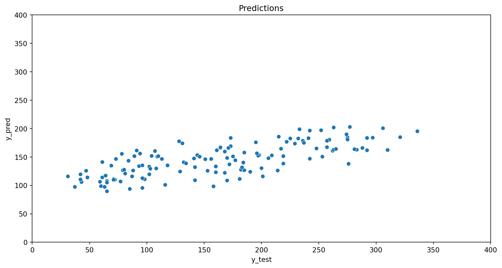
8.5 Cross Validation

8.5.1 hold-out
from sklearn import datasets
from sklearn.tree import DecisionTreeClassifier
from sklearn.model_selection import train_test_split
# Load the X and y data from the iris dataset
iris = datasets.load_iris()
X = iris.data
y = iris.target
X.shape(150, 4)X_train, X_test, y_train, y_test = train_test_split(X,y,test_size=0.35,random_state=2023)
X_train.shape(97, 4)model=DecisionTreeClassifier()
model.fit(X_train,y_train)
mod_score = model.score( X_test, y_test) # devolve a accuracy
mod_score0.96226415094339628.5.2 Leave-one-out CV

verifica as partições
import numpy as np
from sklearn.model_selection import LeaveOneOut
# criar dados de exemplo
X = np.array([[1, 2], [3, 4], [5, 6], [7, 8]])
y = np.array([1, 2, 3, 4])
# iniciar o metodo de CV
loo = LeaveOneOut()
# métodos que dá o número de splits para cross validadtion
loo.get_n_splits(X)
print(loo)
# a função split faz os splits
for i, (train_index, test_index) in enumerate(loo.split(X)):
print(f"Fold {i}:")
print(f" Train: index={train_index}")
print(f" Test: index={test_index}")LeaveOneOut()
Fold 0:
Train: index=[1 2 3]
Test: index=[0]
Fold 1:
Train: index=[0 2 3]
Test: index=[1]
Fold 2:
Train: index=[0 1 3]
Test: index=[2]
Fold 3:
Train: index=[0 1 2]
Test: index=[3]exemplo para calcular Score com dados do Iris
import numpy as np
from sklearn import datasets
from sklearn.model_selection import LeaveOneOut
from sklearn.tree import DecisionTreeClassifier
from sklearn.model_selection import cross_val_score
# Load the X and y data from the iris dataset
iris = datasets.load_iris()
X = iris.data
y = iris.target
X.shape(150, 4)model = DecisionTreeClassifier()
leave_val = LeaveOneOut()
leave_val
mod_score = cross_val_score( model, X, y, cv = leave_val) # acertos
mod_scorearray([1., 1., 1., 1., 1., 1., 1., 1., 1., 1., 1., 1., 1., 1., 1., 1., 1.,
1., 1., 1., 1., 1., 1., 1., 1., 1., 1., 1., 1., 1., 1., 1., 1., 1.,
1., 1., 1., 1., 1., 1., 1., 1., 1., 1., 1., 1., 1., 1., 1., 1., 1.,
1., 1., 1., 1., 1., 1., 0., 1., 1., 1., 1., 1., 1., 1., 1., 1., 1.,
1., 1., 0., 1., 1., 1., 1., 1., 1., 0., 1., 1., 1., 1., 1., 0., 1.,
1., 1., 1., 1., 1., 1., 1., 1., 1., 1., 1., 1., 1., 1., 1., 1., 1.,
1., 1., 1., 1., 0., 1., 1., 1., 1., 1., 1., 1., 1., 1., 1., 1., 1.,
0., 1., 1., 1., 1., 1., 1., 1., 1., 1., 0., 1., 1., 1., 1., 1., 1.,
1., 1., 0., 1., 1., 1., 1., 1., 1., 1., 1., 1., 1., 1.])print(np.mean(mod_score)) # accuracy0.94666666666666678.5.3 Leave-P-out
verificar as partições
import numpy as np
from sklearn.model_selection import LeavePOut
X = np.array([[1, 2], [3, 4], [5, 6], [7, 8]])
y = np.array([1, 2, 3, 4])
lpo = LeavePOut(2)
# métodos que dá o número de splits para cross validadtion
lpo.get_n_splits(X)
print(lpo)
# a função split faz os splits
for i, (train_index, test_index) in enumerate(lpo.split(X)):
print(f"Fold {i}:")
print(f" Train: index={train_index}")
print(f" Test: index={test_index}")LeavePOut(p=2)
Fold 0:
Train: index=[2 3]
Test: index=[0 1]
Fold 1:
Train: index=[1 3]
Test: index=[0 2]
Fold 2:
Train: index=[1 2]
Test: index=[0 3]
Fold 3:
Train: index=[0 3]
Test: index=[1 2]
Fold 4:
Train: index=[0 2]
Test: index=[1 3]
Fold 5:
Train: index=[0 1]
Test: index=[2 3]exemplo com os dados do Iris
import numpy as np
from sklearn import datasets
from sklearn.model_selection import LeavePOut
from sklearn.tree import DecisionTreeClassifier
from sklearn.model_selection import cross_val_score
# Load the X and y data from the iris dataset
iris = datasets.load_iris()
X = iris.data
y = iris.target
X.shape(150, 4)listar os acertos
model = DecisionTreeClassifier()
leave_val = LeavePOut(2)
leave_val
mod_score = cross_val_score( model, X, y, cv = leave_val)
mod_scorearray([1., 1., 1., ..., 1., 1., 1.])calcular a accuracy que é a média dos acertos
print(np.mean(mod_score))0.94845637583892628.5.4 K-fold

verifica partições
import numpy as np
from sklearn.model_selection import KFold
X = np.array([[1, 2], [3, 4], [1, 2], [3, 4]])
y = np.array([1, 2, 3, 4])
kf = KFold(n_splits=2)
kf.get_n_splits(X)2print(kf)
KFold(n_splits=2, random_state=None, shuffle=False)
for i, (train_index, test_index) in enumerate(kf.split(X)):
print(f"Fold {i}:")
print(f" Train: index={train_index}")
print(f" Test: index={test_index}")KFold(n_splits=2, random_state=None, shuffle=False)
Fold 0:
Train: index=[2 3]
Test: index=[0 1]
Fold 1:
Train: index=[0 1]
Test: index=[2 3]exemplo com treino do modelo para os Iris
from sklearn.model_selection import KFold
from sklearn.tree import DecisionTreeClassifier
from sklearn import datasets
# Load the X and y data from the iris dataset
iris = datasets.load_iris()
X = iris.data
y = iris.target
X.shape(150, 4)# K-fold split
k_folds = 5
kf = KFold(n_splits=k_folds, shuffle=True, random_state=1972) # faz o sufle dos dados antes de criar os folds
kfKFold(n_splits=5, random_state=1972, shuffle=True)accuracy
# se quisessemos só calcular o score
model=DecisionTreeClassifier()
mod_score = cross_val_score( model, X, y, cv = kf) # accuracy de cada fold
print(np.mean(mod_score))0.9466666666666667podemos também calcular ‘manualmente’ a accuracy de cada fold
from sklearn.tree import DecisionTreeClassifier
scores = []
# Aqui só estamos a obter os indices de split
# por isso servem tanto para X como para y
for train_idx, test_idx in kf.split(X):
X_train, X_test = X[train_idx], X[test_idx]
y_train, y_test = y[train_idx], y[test_idx]
#... treina o modelo, etc
model=DecisionTreeClassifier()
model.fit(X_train, y_train)
mod_score = model.score(X_test, y_test)
scores.append(mod_score)
print(X_train.shape)
print(scores)
print(np.mean(scores))(120, 4)
[1.0, 0.9333333333333333, 0.9333333333333333, 0.9666666666666667, 0.9333333333333333]
0.95333333333333348.5.5 Repeated K-fold
repete o k-fold mas com folds diferentes
import numpy as np
from sklearn.model_selection import RepeatedKFold
X = np.array([[1, 2], [3, 4], [1, 2], [3, 4], [1, 1], [2, 2]])
y = np.array([0, 0, 1, 1, 0, 1])
rkf = RepeatedKFold(n_splits=2, n_repeats=5, random_state=2652124)
rkf.get_n_splits(X, y)10```{python}
RepeatedKFold(n_repeats=2, n_splits=2, random_state=2652124)
for i, (train_index, test_index) in enumerate(rkf.split(X)):
print(f"Fold {i}:")
print(f" Train: index={train_index}")
print(f" Test: index={test_index}")
```Fold 0:
Train: index=[0 4 5]
Test: index=[1 2 3]
Fold 1:
Train: index=[1 2 3]
Test: index=[0 4 5]
Fold 2:
Train: index=[1 3 5]
Test: index=[0 2 4]
Fold 3:
Train: index=[0 2 4]
Test: index=[1 3 5]
Fold 4:
Train: index=[0 3 5]
Test: index=[1 2 4]
Fold 5:
Train: index=[1 2 4]
Test: index=[0 3 5]
Fold 6:
Train: index=[0 3 4]
Test: index=[1 2 5]
Fold 7:
Train: index=[1 2 5]
Test: index=[0 3 4]
Fold 8:
Train: index=[0 2 3]
Test: index=[1 4 5]
Fold 9:
Train: index=[1 4 5]
Test: index=[0 2 3]calcular o score accuracy para Iris
import numpy as np
from sklearn.model_selection import RepeatedKFold
from sklearn.tree import DecisionTreeClassifier
from sklearn.model_selection import cross_val_score
from sklearn import datasets
# Load the X and y data from the iris dataset
iris = datasets.load_iris()
X = iris.data
y = iris.target
X.shape(150, 4)model = DecisionTreeClassifier()
rkf = RepeatedKFold(n_splits=10, n_repeats=2, random_state=2020)
rkf
mod_score = cross_val_score( model, X, y, cv = rkf)
print(mod_score)[0.86666667 0.86666667 1. 1. 1. 1.
0.93333333 0.93333333 1. 1. 0.86666667 1.
0.93333333 0.93333333 0.93333333 0.86666667 1. 1.
1. 0.93333333]8.5.6 Stratifies K-fold
a importância de instanciar
import pandas as pd
from sklearn.datasets import make_classification
from sklearn.model_selection import train_test_split, StratifiedKFold, StratifiedShuffleSplit, KFold
# criar dados sinteticos para classificação
make_class = make_classification(n_samples=500,n_features=3,
n_redundant=0,n_informative=2,
n_classes=3,n_clusters_per_class=1,
random_state=11)
data = pd.DataFrame(make_class[0],columns=range(make_class[0].shape[1]))
data['target'] = make_class[1]
data.head()| 0 | 1 | 2 | target | |
|---|---|---|---|---|
| 0 | 0.035466 | -0.892312 | -0.380444 | 2 |
| 1 | 0.906985 | 1.563291 | -1.761234 | 0 |
| 2 | 0.710053 | 0.307698 | -0.325675 | 0 |
| 3 | -0.725445 | -0.957154 | -0.799394 | 2 |
| 4 | -0.413388 | 0.582738 | 1.417160 | 1 |
ver como se distribuiram os dados entre treino e teste
train_df,test_df = train_test_split(data,test_size=0.2,random_state=11)
print(f'PROPORTION OF TARGET IN THE ORIGINAL DATA\n{data["target"].value_counts() / len(data)}\n\n'+
f'PROPORTION OF TARGET IN THE TRAINING SET\n{train_df["target"].value_counts() / len(train_df)}\n\n'+
f'PROPORTION OF TARGET IN THE TEST SET\n{test_df["target"].value_counts() / len(test_df)}')PROPORTION OF TARGET IN THE ORIGINAL DATA
target
1 0.342
2 0.330
0 0.328
Name: count, dtype: float64
PROPORTION OF TARGET IN THE TRAINING SET
target
1 0.345
2 0.345
0 0.310
Name: count, dtype: float64
PROPORTION OF TARGET IN THE TEST SET
target
0 0.40
1 0.33
2 0.27
Name: count, dtype: float64# na divisão dos dados em treino e test podemos estartificar pelo 'target'
train_df,test_df = train_test_split(data,test_size=0.2,stratify=data['target'],random_state=11)
print(f'PROPORTION OF TARGET IN THE ORIGINAL DATA\n{data["target"].value_counts() / len(data)}\n\n'+
f'PROPORTION OF TARGET IN THE TRAINING SET\n{train_df["target"].value_counts() / len(train_df)}\n\n'+
f'PROPORTION OF TARGET IN THE TEST SET\n{test_df["target"].value_counts() / len(test_df)}')PROPORTION OF TARGET IN THE ORIGINAL DATA
target
1 0.342
2 0.330
0 0.328
Name: count, dtype: float64
PROPORTION OF TARGET IN THE TRAINING SET
target
1 0.3425
2 0.3300
0 0.3275
Name: count, dtype: float64
PROPORTION OF TARGET IN THE TEST SET
target
1 0.34
0 0.33
2 0.33
Name: count, dtype: float64exemplo para Iris
import numpy as np
from sklearn.model_selection import StratifiedKFold
from sklearn.tree import DecisionTreeClassifier
from sklearn.model_selection import cross_val_score
from sklearn import datasets
# Load the X and y data from the iris dataset
iris = datasets.load_iris()
X = iris.data
y = iris.target
X.shape(150, 4)k = 5 # numero de blocos
skf = StratifiedKFold(n_splits=k, shuffle=True)
skfStratifiedKFold(n_splits=5, random_state=None, shuffle=True)model = DecisionTreeClassifier()
mod_score = cross_val_score(model, X, y,cv=skf)
mod_score
print(np.mean(mod_score))0.9466666666666667‘manualmente’
scores = []
# o split do stratified recebe 2 argumentos
for train_idx, test_idx in skf.split(X, y):
X_train, X_test = X[train_idx], X[test_idx]
y_train, y_test = y[train_idx], y[test_idx]
#... treina o modelo, etc
model=DecisionTreeClassifier()
model.fit(X_train, y_train)
mod_score = model.score(X_test, y_test)
scores.append(mod_score)
print(X_train.shape)
print(scores)
print(np.mean(scores))(120, 4)
[0.9666666666666667, 0.9333333333333333, 0.8333333333333334, 1.0, 0.9666666666666667]
0.94000000000000018.6 Random Forest

construir uma Random Forest
from sklearn.ensemble import RandomForestClassifier
from sklearn.datasets import make_classification
X, y = make_classification(n_samples=1000, n_features=4,
n_informative=2, n_redundant=0,
random_state=2023, shuffle=False)
# print(X)
# print(y)clf = RandomForestClassifier(max_depth=2, oob_score=True,random_state=2023)
clf.fit(X, y)
clf.score(X, y)
clf.oob_score_0.922previsoes
print(clf.predict([[0.8, 1.43, 0.65, 2.1]]))
print(clf.predict_proba([[0.8, 1.43, 0.65, 2.1]]))
print(clf.predict([[0.5, -0.3, -0.25, 0.1]]))[1]
[[0.15366738 0.84633262]]
[0]8.6.1 Out-of-bag error

os registos que não foram usados pelo bootsrap podem ser usados para avaliar a árvore criada
from collections import OrderedDict
import matplotlib.pyplot as plt
from sklearn.datasets import make_classification
from sklearn.ensemble import RandomForestClassifier
RANDOM_STATE = 2023
# Fazer a classificação com 500 datapoints (dados sinteticos)
X, y = make_classification(
n_samples=500,
n_features=25,
n_clusters_per_class=1,
n_informative=15,
random_state=RANDOM_STATE,
)
# X tem 25 features/colunas
Xarray([[-1.03507303, 0.74316058, -2.45157401, ..., 0.5779369 ,
-1.49098328, -1.03897662],
[ 0.02242699, 1.29471708, -1.90010424, ..., 0.64932473,
-2.84355268, 0.05187387],
[-0.37973513, -1.04108384, -0.94793872, ..., -4.20918979,
-0.75214391, -2.2830426 ],
...,
[-2.77479227, -4.93285359, 1.08000128, ..., -0.23486044,
0.84228215, -1.57101225],
[ 1.38102277, 0.28753157, -1.17678184, ..., 1.26890482,
-2.42740796, -0.84212714],
[ 1.54576985, 3.46133511, 0.96445593, ..., 1.62788345,
0.89764588, -0.93738213]])Parâmetros impotantes
n_estimatorsserá o número de árvores a crescer na floresta, por omissão 100max_depthserá o máximo para cada árvore, se vazio continua a crescer a árvore até atingir folhas puras ou até que todas as folhas tenham menos que min_samples_split exemplos nas folhasmin_samples_splitserá o minimo de exemplo num nó para fazer um split e continuar a crescer a árvoremax_featuresserá o número de features/colunas a considerar quando procuramos o melhor split para cada crescimento da árvoreoob_scorese quisermos ter o erro out-of-bag tem de estar a True, por omissão está a false e usa oaccuracy_score
ensemble de varias random forest mudando o max_feat
OrderedDict([("RandomForestClassifier, max_features='sqrt'",
[(15, 0.14400000000000002),
(20, 0.11199999999999999),
(25, 0.09999999999999998),
(30, 0.08799999999999997),
(35, 0.09599999999999997),
(40, 0.09199999999999997),
(45, 0.08599999999999997),
(50, 0.08599999999999997),
(55, 0.08399999999999996),
(60, 0.08799999999999997),
(65, 0.08199999999999996),
(70, 0.07999999999999996),
(75, 0.07799999999999996),
(80, 0.07799999999999996),
(85, 0.07999999999999996),
(90, 0.07799999999999996),
(95, 0.07799999999999996),
(100, 0.07999999999999996),
(105, 0.07799999999999996),
(110, 0.07599999999999996),
(115, 0.07799999999999996),
(120, 0.07999999999999996),
(125, 0.07399999999999995),
(130, 0.07399999999999995),
(135, 0.07199999999999995),
(140, 0.06999999999999995),
(145, 0.07199999999999995),
(150, 0.06999999999999995)]),
("RandomForestClassifier, max_features='log2'",
[(15, 0.14),
(20, 0.118),
(25, 0.118),
(30, 0.10399999999999998),
(35, 0.09599999999999997),
(40, 0.09199999999999997),
(45, 0.08999999999999997),
(50, 0.08199999999999996),
(55, 0.09199999999999997),
(60, 0.08199999999999996),
(65, 0.08599999999999997),
(70, 0.08799999999999997),
(75, 0.09399999999999997),
(80, 0.09199999999999997),
(85, 0.08799999999999997),
(90, 0.08599999999999997),
(95, 0.08799999999999997),
(100, 0.08399999999999996),
(105, 0.07999999999999996),
(110, 0.07799999999999996),
(115, 0.07799999999999996),
(120, 0.07799999999999996),
(125, 0.07399999999999995),
(130, 0.07399999999999995),
(135, 0.07599999999999996),
(140, 0.07599999999999996),
(145, 0.07599999999999996),
(150, 0.07599999999999996)]),
('RandomForestClassifier, max_features=None',
[(15, 0.124),
(20, 0.124),
(25, 0.122),
(30, 0.09999999999999998),
(35, 0.10799999999999998),
(40, 0.09599999999999997),
(45, 0.10599999999999998),
(50, 0.10599999999999998),
(55, 0.10599999999999998),
(60, 0.10199999999999998),
(65, 0.09799999999999998),
(70, 0.09999999999999998),
(75, 0.09999999999999998),
(80, 0.10199999999999998),
(85, 0.10199999999999998),
(90, 0.10199999999999998),
(95, 0.10199999999999998),
(100, 0.09599999999999997),
(105, 0.09599999999999997),
(110, 0.09599999999999997),
(115, 0.09399999999999997),
(120, 0.08999999999999997),
(125, 0.09399999999999997),
(130, 0.09399999999999997),
(135, 0.09199999999999997),
(140, 0.09199999999999997),
(145, 0.09799999999999998),
(150, 0.09199999999999997)])])visualização do OOB error de acordo com o número de arvores usadas e para os três max_features
# Prepara o gráfico "OOB error rate" vs. "n_estimators"
for label, clf_err in error_rate.items():
xs, ys = zip(*clf_err)
plt.plot(xs, ys, label=label)
plt.xlim(min_estimators, max_estimators)
plt.xlabel("n_estimators")
plt.ylabel("OOB error rate")
plt.legend(loc="upper right")
plt.show()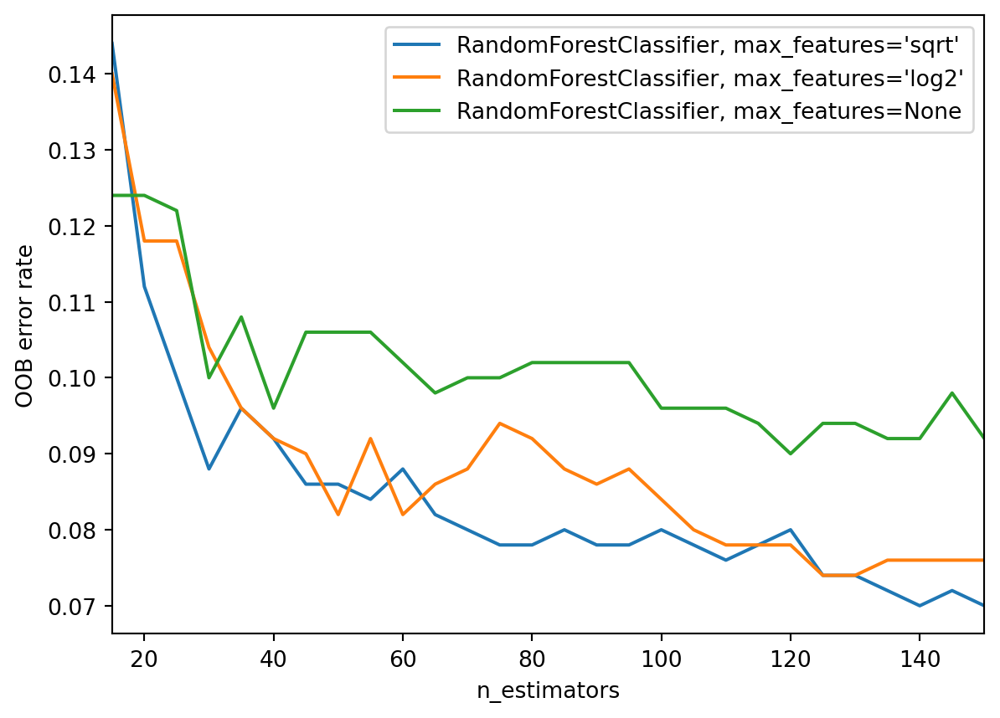
8.7 Tuning dos hiperparametros
Grid Search e Randomized Search são as duas técnicas mais amplamente utilizadas no ajuste de hiperparâmetros.
8.7.1 GridSearchCV
pesquisa exaustiva para cada combinação de hiperparametros especificados
exemplo com dados Breast_Cancer
import pandas as pd
import numpy as np
from sklearn.linear_model import LogisticRegression
from sklearn.model_selection import GridSearchCV
from sklearn import datasets
# Load X e y data a partir do dataset
cancer = datasets.load_breast_cancer()
cancer.keys()
print()
cancer['feature_names']
print()
cancer['target_names']
array(['malignant', 'benign'], dtype='<U9')X = cancer.data
y = cancer.target
X.shape(569, 30)definir o algoritmo a usar e os respectivosparametros a testar
logModel = LogisticRegression()
# Contruimos a grid de parâmetros
param_grid = [
{'penalty' : ['l1', 'l2', 'elasticnet', 'none'],
'C' : np.logspace(-4, 4, 20),
'solver' : ['lbfgs','newton-cg','liblinear','sag','saga'],
'max_iter' : [100, 1000,2500, 5000]
}
]
param_grid[{'penalty': ['l1', 'l2', 'elasticnet', 'none'],
'C': array([1.00000000e-04, 2.63665090e-04, 6.95192796e-04, 1.83298071e-03,
4.83293024e-03, 1.27427499e-02, 3.35981829e-02, 8.85866790e-02,
2.33572147e-01, 6.15848211e-01, 1.62377674e+00, 4.28133240e+00,
1.12883789e+01, 2.97635144e+01, 7.84759970e+01, 2.06913808e+02,
5.45559478e+02, 1.43844989e+03, 3.79269019e+03, 1.00000000e+04]),
'solver': ['lbfgs', 'newton-cg', 'liblinear', 'sag', 'saga'],
'max_iter': [100, 1000, 2500, 5000]}]a função GridSearchCV tem o parametro refit por defeito TRUE o que significa quje o treino é feito com os melhores parametros encontrados apos CV.
# por omissão refit = True
clf = GridSearchCV(logModel, param_grid = param_grid, cv = 3, verbose=True, n_jobs=-1)
clfGridSearchCV(cv=3, estimator=LogisticRegression(), n_jobs=-1,
param_grid=[{'C': array([1.00000000e-04, 2.63665090e-04, 6.95192796e-04, 1.83298071e-03,
4.83293024e-03, 1.27427499e-02, 3.35981829e-02, 8.85866790e-02,
2.33572147e-01, 6.15848211e-01, 1.62377674e+00, 4.28133240e+00,
1.12883789e+01, 2.97635144e+01, 7.84759970e+01, 2.06913808e+02,
5.45559478e+02, 1.43844989e+03, 3.79269019e+03, 1.00000000e+04]),
'max_iter': [100, 1000, 2500, 5000],
'penalty': ['l1', 'l2', 'elasticnet', 'none'],
'solver': ['lbfgs', 'newton-cg', 'liblinear', 'sag',
'saga']}],
verbose=True)In a Jupyter environment, please rerun this cell to show the HTML representation or trust the notebook. On GitHub, the HTML representation is unable to render, please try loading this page with nbviewer.org.
GridSearchCV(cv=3, estimator=LogisticRegression(), n_jobs=-1,
param_grid=[{'C': array([1.00000000e-04, 2.63665090e-04, 6.95192796e-04, 1.83298071e-03,
4.83293024e-03, 1.27427499e-02, 3.35981829e-02, 8.85866790e-02,
2.33572147e-01, 6.15848211e-01, 1.62377674e+00, 4.28133240e+00,
1.12883789e+01, 2.97635144e+01, 7.84759970e+01, 2.06913808e+02,
5.45559478e+02, 1.43844989e+03, 3.79269019e+03, 1.00000000e+04]),
'max_iter': [100, 1000, 2500, 5000],
'penalty': ['l1', 'l2', 'elasticnet', 'none'],
'solver': ['lbfgs', 'newton-cg', 'liblinear', 'sag',
'saga']}],
verbose=True)LogisticRegression()
LogisticRegression()
Vamos fazer o fit para 3 Folds de: - 20 valores possíveis de C - 4 possíveis penalty - 5 possíveis solvers - 4 máximos para iterações
Portanto no total vamos fazer 20x4x5x4 = 1600 candidatos x número de folds (3)
Ou seja, 4800 fits
best_clf = clf.fit(X,y)
best_clf.best_estimator_
print (f'Accuracy : {best_clf.score(X,y):.3f}')vamos fazer a previsão para para o primeiro array de X
X[0]
print()
pred = clf.predict(X[0].reshape(1, -1))
pred[0]
print()
pred_prob = clf.predict_proba(X[0].reshape(1, -1))
pred_prob8.7.2 RandomizedSerachCV
from scipy.stats import randint as sp_randint
exemplo = sp_randint(1, 11)
exemplo<scipy.stats._distn_infrastructure.rv_discrete_frozen at 0x21e5f725490># sp_randint pode ser usado nos parâmetros
# exemplo é um objecto da rv_class
# o método rvs vai gerar random variate sample
# random_state pode ser usado
exemplo.rvs(20)array([ 3, 7, 10, 6, 1, 5, 4, 9, 3, 4, 6, 2, 1, 7, 7, 3, 7,
10, 6, 10], dtype=int64)pode ser usado qualquer rvs
import scipy
a = scipy.stats.expon(scale=.1)
a.rvs(10)array([0.20731074, 0.146981 , 0.09936324, 0.05244919, 0.04635788,
0.38803707, 0.47398721, 0.07785736, 0.01881432, 0.46095715])# distribuição normal com mean .25 stddev 0.1, entre 0 e 1
b = scipy.stats.truncnorm(a=0, b=1, loc=0.25, scale=0.1)
b.rvs(10)
# distribuição uniforme entre .01 e .2
c = scipy.stats.uniform(0.01, 0.199)
c.rvs(10)array([0.17598444, 0.06577611, 0.13389787, 0.097304 , 0.14016357,
0.16754231, 0.11156686, 0.17364086, 0.13752604, 0.11422778])import pandas as pd
import numpy as np
from sklearn.ensemble import RandomForestClassifier
from sklearn.model_selection import RandomizedSearchCV
from sklearn.model_selection import train_test_split
from sklearn.metrics import confusion_matrix
from sklearn import datasets
# Load the X and y data from the dataset
cancer = datasets.load_breast_cancer()X = cancer.data
y = cancer.target
X.shape(569, 30)param_dist = {"max_depth": [3, 5],
"max_features": sp_randint(1, 11),
"min_samples_split": sp_randint(2, 11),
"bootstrap": [True, False],
"criterion": ["gini", "entropy"]}
param_dist{'max_depth': [3, 5],
'max_features': <scipy.stats._distn_infrastructure.rv_discrete_frozen at 0x21e5c93d310>,
'min_samples_split': <scipy.stats._distn_infrastructure.rv_discrete_frozen at 0x21e66eeb290>,
'bootstrap': [True, False],
'criterion': ['gini', 'entropy']}# construir o classificador indicando o nº
# de árvores a crescer na floresta
clf = RandomForestClassifier(n_estimators=50) # 50 árvores
clfRandomForestClassifier(n_estimators=50)In a Jupyter environment, please rerun this cell to show the HTML representation or trust the notebook.
On GitHub, the HTML representation is unable to render, please try loading this page with nbviewer.org.
RandomForestClassifier(n_estimators=50)
X_train, X_test, y_train, y_test = train_test_split(X,y,test_size=0.15,random_state=2023)
X_train.shape(483, 30)random_search = RandomizedSearchCV(clf,
param_distributions=param_dist,
n_iter=20,
cv=5)
random_search.fit(X_train, y_train)
print(random_search.best_params_){'bootstrap': False, 'criterion': 'gini', 'max_depth': 5, 'max_features': 6, 'min_samples_split': 7}X_test[12]
print()
y_test[12]1random_search.predict(X_test[12].reshape(1, -1))[0]
print()
cm = confusion_matrix(y_test, random_search.predict(X_test))
print(pd.DataFrame(cm,columns = ['pred: 0','pred: 1'],
index = ['real: 0','real: 1']))
pred: 0 pred: 1
real: 0 29 4
real: 1 1 528.7.3 NestedCV
começamos por gerar dados sintéticos
import numpy as np
from sklearn.datasets import make_classification
from sklearn.model_selection import KFold
from sklearn.model_selection import GridSearchCV
from sklearn.ensemble import RandomForestClassifier
from sklearn.metrics import accuracy_score
# cria o dataset
X, y = make_classification(n_samples=1000, n_features=20, random_state=1, n_informative=10, n_redundant=10)
Xarray([[-5.09180894, 0.62982401, -1.56637522, ..., -5.75139697,
-1.26632999, 1.38003548],
[ 1.79142035, 1.53228466, 2.15499957, ..., -3.36234377,
1.54280911, 1.45120234],
[-7.57085584, -0.2920971 , -3.63471958, ..., -4.34397246,
-1.96120901, 3.26295049],
...,
[ 6.52439854, 0.63786484, 1.25975251, ..., -2.64387023,
1.58504635, 1.77162916],
[ 2.97193516, 2.78895124, -0.8083023 , ..., 4.84079601,
-1.78274376, -0.14141052],
[ 1.38863762, 0.18337514, 3.10736912, ..., -1.83700097,
2.09963137, -1.76449296]])são feitos dois loops
# configura o loop exterior
cv_outer = KFold(n_splits=10, shuffle=True, random_state=1999)
# prepara a lista para o loop exterior
outer_results = list()
# configura o loop CV interior
cv_inner = KFold(n_splits=3, shuffle=True, random_state=1999)
# o loop interior serve para escolher os parametros
# define o espaço de procura
param_grid = {'n_estimators': [10, 100, 500],
'max_features': [2, 4, 6] }# define o modelo
model = RandomForestClassifier(random_state=1999)# para o loop exterior em que vamos ter KFold (10 blocos)
for train_idx, test_idx in cv_outer.split(X):
# split dos dados com os indexes dados pelo split
X_train, X_test = X[train_idx, :], X[test_idx, :]
y_train, y_test = y[train_idx], y[test_idx]
# define a procura dos hyperparâmetros
search = GridSearchCV(model, param_grid,
scoring='accuracy',
cv=cv_inner,
refit=True)
# executa a procura fazendo o fit
result = search.fit(X_train, y_train)
# regista o melhor fit
best_model = result.best_estimator_
# prevê com o modelo usando o hold-out dataset
y_pred = best_model.predict(X_test)
# avalia o modelo
acc = accuracy_score(y_test, y_pred)
# regista os resultados do outer CV na lista
outer_results.append(acc)
# reporta o progresso
print('>acc=%.3f, est=%.3f, cfg=%s' % (acc, result.best_score_, result.best_params_))
# sumariza a performance estimada do modelo
print('Accuracy: %.3f (%.3f)' % (np.mean(outer_results), np.std(outer_results)))>acc=0.980, est=0.926, cfg={'max_features': 2, 'n_estimators': 100}>acc=0.930, est=0.930, cfg={'max_features': 2, 'n_estimators': 500}>acc=0.930, est=0.918, cfg={'max_features': 2, 'n_estimators': 100}>acc=0.950, est=0.920, cfg={'max_features': 4, 'n_estimators': 500}>acc=0.930, est=0.928, cfg={'max_features': 2, 'n_estimators': 500}>acc=0.940, est=0.920, cfg={'max_features': 4, 'n_estimators': 500}>acc=0.880, est=0.933, cfg={'max_features': 2, 'n_estimators': 500}>acc=0.910, est=0.939, cfg={'max_features': 6, 'n_estimators': 100}>acc=0.920, est=0.929, cfg={'max_features': 2, 'n_estimators': 100}>acc=0.930, est=0.924, cfg={'max_features': 4, 'n_estimators': 100}
Accuracy: 0.930 (0.024)de forma mais condensada
import numpy as np
from sklearn.model_selection import cross_val_score, KFold
from sklearn.ensemble import RandomForestClassifier
from sklearn.model_selection import GridSearchCV
from sklearn import datasets
# Carrega os Dados
cancer = datasets.load_breast_cancer()
X = cancer.data
y = cancer.target
# escolhe o modelo
rf = RandomForestClassifier()
# define a grid
param_grid = {'n_estimators': [50, 100, 200],
'max_depth': [None, 5, 10],
'min_samples_split': [2, 5, 10]}
# define os loops de CV
outer_cv = KFold(n_splits=3, shuffle=True, random_state=2023)
inner_cv = KFold(n_splits=5, shuffle=True, random_state=2023)
# Define a procura de hyperparâmetros do loop interior de CV
model = GridSearchCV(
estimator=rf, param_grid=param_grid, cv=inner_cv, n_jobs=-1
)
# Define a seleção e avaliação de modelo no loop exterior de CV
scores = cross_val_score(model, X, y,
scoring='accuracy',
cv=outer_cv, n_jobs=-1)
print('Accuracy: %.3f (%.3f)' % (np.mean(scores), np.std(scores)))Accuracy: 0.956 (0.015)8.8 Suport Vector Machines (SVM)

# importar os datasets
from sklearn import datasets
# load do dataset
cancer = datasets.load_breast_cancer()
# ver os dois primeiros registos
print(cancer.data[0:2])[[1.799e+01 1.038e+01 1.228e+02 1.001e+03 1.184e-01 2.776e-01 3.001e-01
1.471e-01 2.419e-01 7.871e-02 1.095e+00 9.053e-01 8.589e+00 1.534e+02
6.399e-03 4.904e-02 5.373e-02 1.587e-02 3.003e-02 6.193e-03 2.538e+01
1.733e+01 1.846e+02 2.019e+03 1.622e-01 6.656e-01 7.119e-01 2.654e-01
4.601e-01 1.189e-01]
[2.057e+01 1.777e+01 1.329e+02 1.326e+03 8.474e-02 7.864e-02 8.690e-02
7.017e-02 1.812e-01 5.667e-02 5.435e-01 7.339e-01 3.398e+00 7.408e+01
5.225e-03 1.308e-02 1.860e-02 1.340e-02 1.389e-02 3.532e-03 2.499e+01
2.341e+01 1.588e+02 1.956e+03 1.238e-01 1.866e-01 2.416e-01 1.860e-01
2.750e-01 8.902e-02]]dividir em treino/test
# importar a função train_test_split
from sklearn.model_selection import train_test_split
# Split do dataset
X_train, X_test, y_train, y_test = train_test_split(cancer.data,
cancer.target,
test_size=0.3,
random_state=1980) aplicar o SVM
# importar o modelo svm
from sklearn import svm
# criar o classificador svm
# com um kernel linear
# para fazer classificação SVC
# para regressão seria SVR
clf = svm.SVC(kernel='linear')
# treinar o modelo (fazer o fit)
clf.fit(X_train, y_train)
# prever com o dataset de teste
y_pred = clf.predict(X_test)ver resultados
# importar as métricas para avaliar o modelo
from sklearn import metrics
# Model Accuracy: Quantas vezes acerta o classificador
# Diagonal
print("Accuracy:",metrics.accuracy_score(y_test, y_pred))
# Model Precision: Dos que previu como positivos quantos eram realmente positivos
# Coluna direita
print("Precision:",metrics.precision_score(y_test, y_pred))
# Model Recall: Dos que são positivos quantos previu
# Linha inferior
print("Recall:",metrics.recall_score(y_test, y_pred))Accuracy: 0.9532163742690059
Precision: 0.9396551724137931
Recall: 0.990909090909091from sklearn.metrics import confusion_matrix
import pandas as pd
cm = confusion_matrix(y_test, y_pred)
print(pd.DataFrame(cm,columns = ['pred: 0','pred: 1'],
index = ['real: 0','real: 1'])) pred: 0 pred: 1
real: 0 54 7
real: 1 1 109import numpy as np
from sklearn.model_selection import LearningCurveDisplay
from sklearn.model_selection import cross_validate, ShuffleSplit
cv = ShuffleSplit(random_state=0)
train_sizes = np.linspace(0.1, 1, num=10)
disp = LearningCurveDisplay.from_estimator(
clf,
cancer.data,
cancer.target,
train_sizes=train_sizes,
cv=cv,
score_type="both",
scoring="accuracy",
score_name="Accuracy",
std_display_style="errorbar",
errorbar_kw={"alpha": 0.7},
n_jobs=2,
)
_ = disp.ax_.set(title="Learning curve for support vector machine")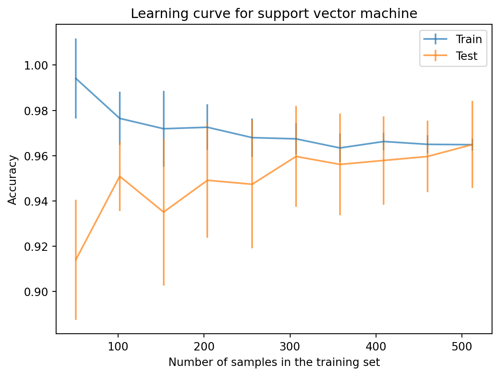
8.8.1 SVM kernels
import pandas as pd
import numpy as np
from sklearn import datasets
from sklearn.svm import SVC
from sklearn.metrics import classification_report, confusion_matrix
import matplotlib.pyplot as plt
# Load X e y data a partir do dataset
iris = datasets.load_iris()
_, ax = plt.subplots()
scatter = ax.scatter(iris.data[:, 0], iris.data[:, 1], c=iris.target)
ax.set(xlabel=iris.feature_names[0], ylabel=iris.feature_names[1])
_ = ax.legend(
scatter.legend_elements()[0], iris.target_names, loc="lower right", title="Classes"
)
plt.show()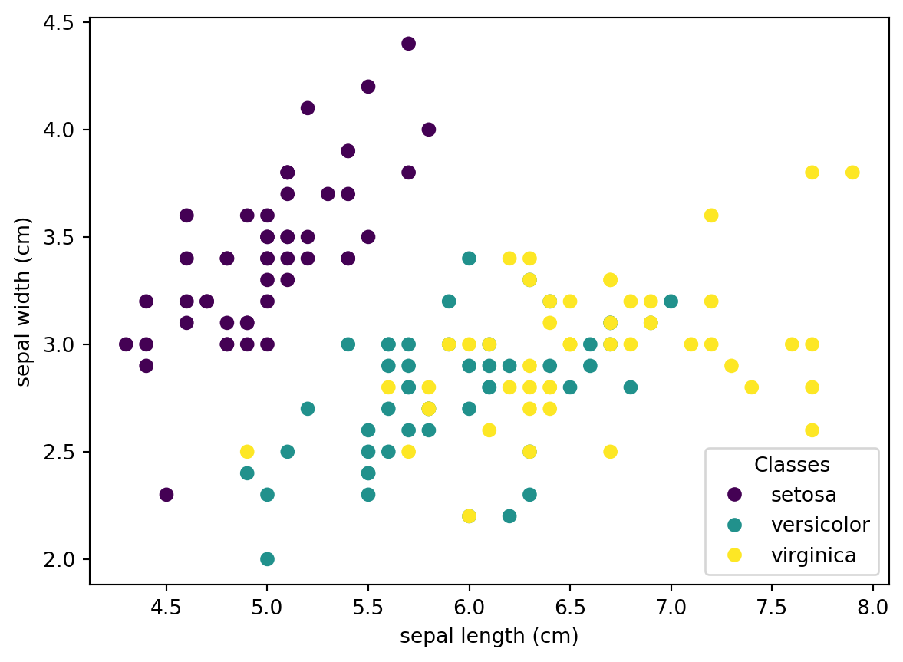
X = iris.data
y = iris.target
X.shape(150, 4)from sklearn.model_selection import train_test_split
X_train, X_test, y_train, y_test = train_test_split(X, y, test_size = 0.20)
kernels = ['Polynomial', 'RBF', 'Sigmoid','Linear']
# função para instanciar classificador ed acordo com o tipo escolhido (ktype)
def getClassifier(ktype):
if ktype == 0:
# Polynomial kernal
return SVC(kernel='poly', degree=8, gamma="auto")
elif ktype == 1:
# Radial Basis Function kernal
return SVC(kernel='rbf', gamma="auto")
elif ktype == 2:
# Sigmoid kernal
return SVC(kernel='sigmoid', gamma="auto")
elif ktype == 3:
# Linear kernal
return SVC(kernel='linear', gamma="auto")for i in range(4):
# Separate data into test and training sets
X_train, X_test, y_train, y_test = train_test_split(X, y, test_size = 0.20)# Train a SVC model using different kernels
svclassifier = getClassifier(i)
svclassifier.fit(X_train, y_train)# Make prediction
y_pred = svclassifier.predict(X_test)# Evaluate our model
print("Evaluation:", kernels[i], "kernel")
print(classification_report(y_test,y_pred))Evaluation: Polynomial kernel
precision recall f1-score support
0 1.00 1.00 1.00 10
1 1.00 1.00 1.00 10
2 1.00 1.00 1.00 10
accuracy 1.00 30
macro avg 1.00 1.00 1.00 30
weighted avg 1.00 1.00 1.00 30
Evaluation: RBF kernel
precision recall f1-score support
0 1.00 1.00 1.00 10
1 1.00 1.00 1.00 11
2 1.00 1.00 1.00 9
accuracy 1.00 30
macro avg 1.00 1.00 1.00 30
weighted avg 1.00 1.00 1.00 30
Evaluation: Sigmoid kernel
precision recall f1-score support
0 0.30 1.00 0.46 9
1 0.00 0.00 0.00 11
2 0.00 0.00 0.00 10
accuracy 0.30 30
macro avg 0.10 0.33 0.15 30
weighted avg 0.09 0.30 0.14 30
Evaluation: Linear kernel
precision recall f1-score support
0 1.00 1.00 1.00 9
1 0.90 1.00 0.95 9
2 1.00 0.92 0.96 12
accuracy 0.97 30
macro avg 0.97 0.97 0.97 30
weighted avg 0.97 0.97 0.97 30
Cross validation para tunning de parametros
from sklearn.model_selection import GridSearchCV
param_grid = {'C': [0.1,1, 10, 100], 'gamma': [1,0.1,0.01,0.001],'kernel': ['rbf', 'poly', 'sigmoid']}Fitting 5 folds for each of 48 candidates, totalling 240 fits
[CV] END .........................C=0.1, gamma=1, kernel=rbf; total time= 0.0s
[CV] END .........................C=0.1, gamma=1, kernel=rbf; total time= 0.0s
[CV] END .........................C=0.1, gamma=1, kernel=rbf; total time= 0.0s
[CV] END .........................C=0.1, gamma=1, kernel=rbf; total time= 0.0s
[CV] END .........................C=0.1, gamma=1, kernel=rbf; total time= 0.0s
[CV] END ........................C=0.1, gamma=1, kernel=poly; total time= 0.0s
[CV] END ........................C=0.1, gamma=1, kernel=poly; total time= 0.0s
[CV] END ........................C=0.1, gamma=1, kernel=poly; total time= 0.0s
[CV] END ........................C=0.1, gamma=1, kernel=poly; total time= 0.0s
[CV] END ........................C=0.1, gamma=1, kernel=poly; total time= 0.0s
[CV] END .....................C=0.1, gamma=1, kernel=sigmoid; total time= 0.0s
[CV] END .....................C=0.1, gamma=1, kernel=sigmoid; total time= 0.0s
[CV] END .....................C=0.1, gamma=1, kernel=sigmoid; total time= 0.0s
[CV] END .....................C=0.1, gamma=1, kernel=sigmoid; total time= 0.0s
[CV] END .....................C=0.1, gamma=1, kernel=sigmoid; total time= 0.0s
[CV] END .......................C=0.1, gamma=0.1, kernel=rbf; total time= 0.0s
[CV] END .......................C=0.1, gamma=0.1, kernel=rbf; total time= 0.0s
[CV] END .......................C=0.1, gamma=0.1, kernel=rbf; total time= 0.0s
[CV] END .......................C=0.1, gamma=0.1, kernel=rbf; total time= 0.0s
[CV] END .......................C=0.1, gamma=0.1, kernel=rbf; total time= 0.0s
[CV] END ......................C=0.1, gamma=0.1, kernel=poly; total time= 0.0s
[CV] END ......................C=0.1, gamma=0.1, kernel=poly; total time= 0.0s
[CV] END ......................C=0.1, gamma=0.1, kernel=poly; total time= 0.0s
[CV] END ......................C=0.1, gamma=0.1, kernel=poly; total time= 0.0s
[CV] END ......................C=0.1, gamma=0.1, kernel=poly; total time= 0.0s
[CV] END ...................C=0.1, gamma=0.1, kernel=sigmoid; total time= 0.0s
[CV] END ...................C=0.1, gamma=0.1, kernel=sigmoid; total time= 0.0s
[CV] END ...................C=0.1, gamma=0.1, kernel=sigmoid; total time= 0.0s
[CV] END ...................C=0.1, gamma=0.1, kernel=sigmoid; total time= 0.0s
[CV] END ...................C=0.1, gamma=0.1, kernel=sigmoid; total time= 0.0s
[CV] END ......................C=0.1, gamma=0.01, kernel=rbf; total time= 0.0s
[CV] END ......................C=0.1, gamma=0.01, kernel=rbf; total time= 0.0s
[CV] END ......................C=0.1, gamma=0.01, kernel=rbf; total time= 0.0s
[CV] END ......................C=0.1, gamma=0.01, kernel=rbf; total time= 0.0s
[CV] END ......................C=0.1, gamma=0.01, kernel=rbf; total time= 0.0s
[CV] END .....................C=0.1, gamma=0.01, kernel=poly; total time= 0.0s
[CV] END .....................C=0.1, gamma=0.01, kernel=poly; total time= 0.0s
[CV] END .....................C=0.1, gamma=0.01, kernel=poly; total time= 0.0s
[CV] END .....................C=0.1, gamma=0.01, kernel=poly; total time= 0.0s
[CV] END .....................C=0.1, gamma=0.01, kernel=poly; total time= 0.0s
[CV] END ..................C=0.1, gamma=0.01, kernel=sigmoid; total time= 0.0s
[CV] END ..................C=0.1, gamma=0.01, kernel=sigmoid; total time= 0.0s
[CV] END ..................C=0.1, gamma=0.01, kernel=sigmoid; total time= 0.0s
[CV] END ..................C=0.1, gamma=0.01, kernel=sigmoid; total time= 0.0s
[CV] END ..................C=0.1, gamma=0.01, kernel=sigmoid; total time= 0.0s
[CV] END .....................C=0.1, gamma=0.001, kernel=rbf; total time= 0.0s
[CV] END .....................C=0.1, gamma=0.001, kernel=rbf; total time= 0.0s
[CV] END .....................C=0.1, gamma=0.001, kernel=rbf; total time= 0.0s
[CV] END .....................C=0.1, gamma=0.001, kernel=rbf; total time= 0.0s
[CV] END .....................C=0.1, gamma=0.001, kernel=rbf; total time= 0.0s
[CV] END ....................C=0.1, gamma=0.001, kernel=poly; total time= 0.0s
[CV] END ....................C=0.1, gamma=0.001, kernel=poly; total time= 0.0s
[CV] END ....................C=0.1, gamma=0.001, kernel=poly; total time= 0.0s
[CV] END ....................C=0.1, gamma=0.001, kernel=poly; total time= 0.0s
[CV] END ....................C=0.1, gamma=0.001, kernel=poly; total time= 0.0s
[CV] END .................C=0.1, gamma=0.001, kernel=sigmoid; total time= 0.0s
[CV] END .................C=0.1, gamma=0.001, kernel=sigmoid; total time= 0.0s
[CV] END .................C=0.1, gamma=0.001, kernel=sigmoid; total time= 0.0s
[CV] END .................C=0.1, gamma=0.001, kernel=sigmoid; total time= 0.0s
[CV] END .................C=0.1, gamma=0.001, kernel=sigmoid; total time= 0.0s
[CV] END ...........................C=1, gamma=1, kernel=rbf; total time= 0.0s
[CV] END ...........................C=1, gamma=1, kernel=rbf; total time= 0.0s
[CV] END ...........................C=1, gamma=1, kernel=rbf; total time= 0.0s
[CV] END ...........................C=1, gamma=1, kernel=rbf; total time= 0.0s
[CV] END ...........................C=1, gamma=1, kernel=rbf; total time= 0.0s
[CV] END ..........................C=1, gamma=1, kernel=poly; total time= 0.0s
[CV] END ..........................C=1, gamma=1, kernel=poly; total time= 0.0s
[CV] END ..........................C=1, gamma=1, kernel=poly; total time= 0.0s
[CV] END ..........................C=1, gamma=1, kernel=poly; total time= 0.0s
[CV] END ..........................C=1, gamma=1, kernel=poly; total time= 0.0s
[CV] END .......................C=1, gamma=1, kernel=sigmoid; total time= 0.0s
[CV] END .......................C=1, gamma=1, kernel=sigmoid; total time= 0.0s
[CV] END .......................C=1, gamma=1, kernel=sigmoid; total time= 0.0s[CV] END .......................C=1, gamma=1, kernel=sigmoid; total time= 0.0s
[CV] END .......................C=1, gamma=1, kernel=sigmoid; total time= 0.0s
[CV] END .........................C=1, gamma=0.1, kernel=rbf; total time= 0.0s
[CV] END .........................C=1, gamma=0.1, kernel=rbf; total time= 0.0s
[CV] END .........................C=1, gamma=0.1, kernel=rbf; total time= 0.0s
[CV] END .........................C=1, gamma=0.1, kernel=rbf; total time= 0.0s
[CV] END .........................C=1, gamma=0.1, kernel=rbf; total time= 0.0s
[CV] END ........................C=1, gamma=0.1, kernel=poly; total time= 0.0s
[CV] END ........................C=1, gamma=0.1, kernel=poly; total time= 0.0s
[CV] END ........................C=1, gamma=0.1, kernel=poly; total time= 0.0s
[CV] END ........................C=1, gamma=0.1, kernel=poly; total time= 0.0s
[CV] END ........................C=1, gamma=0.1, kernel=poly; total time= 0.0s
[CV] END .....................C=1, gamma=0.1, kernel=sigmoid; total time= 0.0s
[CV] END .....................C=1, gamma=0.1, kernel=sigmoid; total time= 0.0s
[CV] END .....................C=1, gamma=0.1, kernel=sigmoid; total time= 0.0s
[CV] END .....................C=1, gamma=0.1, kernel=sigmoid; total time= 0.0s
[CV] END .....................C=1, gamma=0.1, kernel=sigmoid; total time= 0.0s
[CV] END ........................C=1, gamma=0.01, kernel=rbf; total time= 0.0s
[CV] END ........................C=1, gamma=0.01, kernel=rbf; total time= 0.0s
[CV] END ........................C=1, gamma=0.01, kernel=rbf; total time= 0.0s
[CV] END ........................C=1, gamma=0.01, kernel=rbf; total time= 0.0s
[CV] END ........................C=1, gamma=0.01, kernel=rbf; total time= 0.0s
[CV] END .......................C=1, gamma=0.01, kernel=poly; total time= 0.0s
[CV] END .......................C=1, gamma=0.01, kernel=poly; total time= 0.0s
[CV] END .......................C=1, gamma=0.01, kernel=poly; total time= 0.0s
[CV] END .......................C=1, gamma=0.01, kernel=poly; total time= 0.0s
[CV] END .......................C=1, gamma=0.01, kernel=poly; total time= 0.0s
[CV] END ....................C=1, gamma=0.01, kernel=sigmoid; total time= 0.0s
[CV] END ....................C=1, gamma=0.01, kernel=sigmoid; total time= 0.0s
[CV] END ....................C=1, gamma=0.01, kernel=sigmoid; total time= 0.0s
[CV] END ....................C=1, gamma=0.01, kernel=sigmoid; total time= 0.0s
[CV] END ....................C=1, gamma=0.01, kernel=sigmoid; total time= 0.0s
[CV] END .......................C=1, gamma=0.001, kernel=rbf; total time= 0.0s
[CV] END .......................C=1, gamma=0.001, kernel=rbf; total time= 0.0s
[CV] END .......................C=1, gamma=0.001, kernel=rbf; total time= 0.0s
[CV] END .......................C=1, gamma=0.001, kernel=rbf; total time= 0.0s
[CV] END .......................C=1, gamma=0.001, kernel=rbf; total time= 0.0s
[CV] END ......................C=1, gamma=0.001, kernel=poly; total time= 0.0s
[CV] END ......................C=1, gamma=0.001, kernel=poly; total time= 0.0s
[CV] END ......................C=1, gamma=0.001, kernel=poly; total time= 0.0s
[CV] END ......................C=1, gamma=0.001, kernel=poly; total time= 0.0s
[CV] END ......................C=1, gamma=0.001, kernel=poly; total time= 0.0s[CV] END ...................C=1, gamma=0.001, kernel=sigmoid; total time= 0.0s
[CV] END ...................C=1, gamma=0.001, kernel=sigmoid; total time= 0.0s
[CV] END ...................C=1, gamma=0.001, kernel=sigmoid; total time= 0.0s
[CV] END ...................C=1, gamma=0.001, kernel=sigmoid; total time= 0.0s
[CV] END ...................C=1, gamma=0.001, kernel=sigmoid; total time= 0.0s
[CV] END ..........................C=10, gamma=1, kernel=rbf; total time= 0.0s
[CV] END ..........................C=10, gamma=1, kernel=rbf; total time= 0.0s
[CV] END ..........................C=10, gamma=1, kernel=rbf; total time= 0.0s
[CV] END ..........................C=10, gamma=1, kernel=rbf; total time= 0.0s
[CV] END ..........................C=10, gamma=1, kernel=rbf; total time= 0.0s
[CV] END .........................C=10, gamma=1, kernel=poly; total time= 0.0s
[CV] END .........................C=10, gamma=1, kernel=poly; total time= 0.0s
[CV] END .........................C=10, gamma=1, kernel=poly; total time= 0.0s
[CV] END .........................C=10, gamma=1, kernel=poly; total time= 0.0s
[CV] END .........................C=10, gamma=1, kernel=poly; total time= 0.0s
[CV] END ......................C=10, gamma=1, kernel=sigmoid; total time= 0.0s
[CV] END ......................C=10, gamma=1, kernel=sigmoid; total time= 0.0s
[CV] END ......................C=10, gamma=1, kernel=sigmoid; total time= 0.0s
[CV] END ......................C=10, gamma=1, kernel=sigmoid; total time= 0.0s
[CV] END ......................C=10, gamma=1, kernel=sigmoid; total time= 0.0s
[CV] END ........................C=10, gamma=0.1, kernel=rbf; total time= 0.0s
[CV] END ........................C=10, gamma=0.1, kernel=rbf; total time= 0.0s
[CV] END ........................C=10, gamma=0.1, kernel=rbf; total time= 0.0s
[CV] END ........................C=10, gamma=0.1, kernel=rbf; total time= 0.0s
[CV] END ........................C=10, gamma=0.1, kernel=rbf; total time= 0.0s
[CV] END .......................C=10, gamma=0.1, kernel=poly; total time= 0.0s
[CV] END .......................C=10, gamma=0.1, kernel=poly; total time= 0.0s
[CV] END .......................C=10, gamma=0.1, kernel=poly; total time= 0.0s
[CV] END .......................C=10, gamma=0.1, kernel=poly; total time= 0.0s
[CV] END .......................C=10, gamma=0.1, kernel=poly; total time= 0.0s
[CV] END ....................C=10, gamma=0.1, kernel=sigmoid; total time= 0.0s
[CV] END ....................C=10, gamma=0.1, kernel=sigmoid; total time= 0.0s
[CV] END ....................C=10, gamma=0.1, kernel=sigmoid; total time= 0.0s[CV] END ....................C=10, gamma=0.1, kernel=sigmoid; total time= 0.0s
[CV] END ....................C=10, gamma=0.1, kernel=sigmoid; total time= 0.0s
[CV] END .......................C=10, gamma=0.01, kernel=rbf; total time= 0.0s
[CV] END .......................C=10, gamma=0.01, kernel=rbf; total time= 0.0s
[CV] END .......................C=10, gamma=0.01, kernel=rbf; total time= 0.0s
[CV] END .......................C=10, gamma=0.01, kernel=rbf; total time= 0.0s
[CV] END .......................C=10, gamma=0.01, kernel=rbf; total time= 0.0s
[CV] END ......................C=10, gamma=0.01, kernel=poly; total time= 0.0s
[CV] END ......................C=10, gamma=0.01, kernel=poly; total time= 0.0s
[CV] END ......................C=10, gamma=0.01, kernel=poly; total time= 0.0s
[CV] END ......................C=10, gamma=0.01, kernel=poly; total time= 0.0s
[CV] END ......................C=10, gamma=0.01, kernel=poly; total time= 0.0s
[CV] END ...................C=10, gamma=0.01, kernel=sigmoid; total time= 0.0s
[CV] END ...................C=10, gamma=0.01, kernel=sigmoid; total time= 0.0s
[CV] END ...................C=10, gamma=0.01, kernel=sigmoid; total time= 0.0s
[CV] END ...................C=10, gamma=0.01, kernel=sigmoid; total time= 0.0s
[CV] END ...................C=10, gamma=0.01, kernel=sigmoid; total time= 0.0s
[CV] END ......................C=10, gamma=0.001, kernel=rbf; total time= 0.0s
[CV] END ......................C=10, gamma=0.001, kernel=rbf; total time= 0.0s
[CV] END ......................C=10, gamma=0.001, kernel=rbf; total time= 0.0s
[CV] END ......................C=10, gamma=0.001, kernel=rbf; total time= 0.0s
[CV] END ......................C=10, gamma=0.001, kernel=rbf; total time= 0.0s
[CV] END .....................C=10, gamma=0.001, kernel=poly; total time= 0.0s
[CV] END .....................C=10, gamma=0.001, kernel=poly; total time= 0.0s
[CV] END .....................C=10, gamma=0.001, kernel=poly; total time= 0.0s
[CV] END .....................C=10, gamma=0.001, kernel=poly; total time= 0.0s
[CV] END .....................C=10, gamma=0.001, kernel=poly; total time= 0.0s
[CV] END ..................C=10, gamma=0.001, kernel=sigmoid; total time= 0.0s
[CV] END ..................C=10, gamma=0.001, kernel=sigmoid; total time= 0.0s
[CV] END ..................C=10, gamma=0.001, kernel=sigmoid; total time= 0.0s
[CV] END ..................C=10, gamma=0.001, kernel=sigmoid; total time= 0.0s
[CV] END ..................C=10, gamma=0.001, kernel=sigmoid; total time= 0.0s
[CV] END .........................C=100, gamma=1, kernel=rbf; total time= 0.0s
[CV] END .........................C=100, gamma=1, kernel=rbf; total time= 0.0s
[CV] END .........................C=100, gamma=1, kernel=rbf; total time= 0.0s
[CV] END .........................C=100, gamma=1, kernel=rbf; total time= 0.0s
[CV] END .........................C=100, gamma=1, kernel=rbf; total time= 0.0s[CV] END ........................C=100, gamma=1, kernel=poly; total time= 0.0s
[CV] END ........................C=100, gamma=1, kernel=poly; total time= 0.0s
[CV] END ........................C=100, gamma=1, kernel=poly; total time= 0.0s
[CV] END ........................C=100, gamma=1, kernel=poly; total time= 0.0s
[CV] END ........................C=100, gamma=1, kernel=poly; total time= 0.0s
[CV] END .....................C=100, gamma=1, kernel=sigmoid; total time= 0.0s
[CV] END .....................C=100, gamma=1, kernel=sigmoid; total time= 0.0s
[CV] END .....................C=100, gamma=1, kernel=sigmoid; total time= 0.0s
[CV] END .....................C=100, gamma=1, kernel=sigmoid; total time= 0.0s
[CV] END .....................C=100, gamma=1, kernel=sigmoid; total time= 0.0s
[CV] END .......................C=100, gamma=0.1, kernel=rbf; total time= 0.0s
[CV] END .......................C=100, gamma=0.1, kernel=rbf; total time= 0.0s
[CV] END .......................C=100, gamma=0.1, kernel=rbf; total time= 0.0s
[CV] END .......................C=100, gamma=0.1, kernel=rbf; total time= 0.0s
[CV] END .......................C=100, gamma=0.1, kernel=rbf; total time= 0.0s
[CV] END ......................C=100, gamma=0.1, kernel=poly; total time= 0.0s[CV] END ......................C=100, gamma=0.1, kernel=poly; total time= 0.0s
[CV] END ......................C=100, gamma=0.1, kernel=poly; total time= 0.0s
[CV] END ......................C=100, gamma=0.1, kernel=poly; total time= 0.0s
[CV] END ......................C=100, gamma=0.1, kernel=poly; total time= 0.0s
[CV] END ...................C=100, gamma=0.1, kernel=sigmoid; total time= 0.0s
[CV] END ...................C=100, gamma=0.1, kernel=sigmoid; total time= 0.0s
[CV] END ...................C=100, gamma=0.1, kernel=sigmoid; total time= 0.0s
[CV] END ...................C=100, gamma=0.1, kernel=sigmoid; total time= 0.0s
[CV] END ...................C=100, gamma=0.1, kernel=sigmoid; total time= 0.0s
[CV] END ......................C=100, gamma=0.01, kernel=rbf; total time= 0.0s
[CV] END ......................C=100, gamma=0.01, kernel=rbf; total time= 0.0s
[CV] END ......................C=100, gamma=0.01, kernel=rbf; total time= 0.0s
[CV] END ......................C=100, gamma=0.01, kernel=rbf; total time= 0.0s
[CV] END ......................C=100, gamma=0.01, kernel=rbf; total time= 0.0s
[CV] END .....................C=100, gamma=0.01, kernel=poly; total time= 0.0s
[CV] END .....................C=100, gamma=0.01, kernel=poly; total time= 0.0s
[CV] END .....................C=100, gamma=0.01, kernel=poly; total time= 0.0s
[CV] END .....................C=100, gamma=0.01, kernel=poly; total time= 0.0s
[CV] END .....................C=100, gamma=0.01, kernel=poly; total time= 0.0s
[CV] END ..................C=100, gamma=0.01, kernel=sigmoid; total time= 0.0s
[CV] END ..................C=100, gamma=0.01, kernel=sigmoid; total time= 0.0s
[CV] END ..................C=100, gamma=0.01, kernel=sigmoid; total time= 0.0s
[CV] END ..................C=100, gamma=0.01, kernel=sigmoid; total time= 0.0s
[CV] END ..................C=100, gamma=0.01, kernel=sigmoid; total time= 0.0s
[CV] END .....................C=100, gamma=0.001, kernel=rbf; total time= 0.0s
[CV] END .....................C=100, gamma=0.001, kernel=rbf; total time= 0.0s
[CV] END .....................C=100, gamma=0.001, kernel=rbf; total time= 0.0s
[CV] END .....................C=100, gamma=0.001, kernel=rbf; total time= 0.0s
[CV] END .....................C=100, gamma=0.001, kernel=rbf; total time= 0.0s
[CV] END ....................C=100, gamma=0.001, kernel=poly; total time= 0.0s
[CV] END ....................C=100, gamma=0.001, kernel=poly; total time= 0.0s
[CV] END ....................C=100, gamma=0.001, kernel=poly; total time= 0.0s
[CV] END ....................C=100, gamma=0.001, kernel=poly; total time= 0.0s
[CV] END ....................C=100, gamma=0.001, kernel=poly; total time= 0.0s
[CV] END .................C=100, gamma=0.001, kernel=sigmoid; total time= 0.0s
[CV] END .................C=100, gamma=0.001, kernel=sigmoid; total time= 0.0s
[CV] END .................C=100, gamma=0.001, kernel=sigmoid; total time= 0.0s
[CV] END .................C=100, gamma=0.001, kernel=sigmoid; total time= 0.0s
[CV] END .................C=100, gamma=0.001, kernel=sigmoid; total time= 0.0sGridSearchCV(estimator=SVC(),
param_grid={'C': [0.1, 1, 10, 100], 'gamma': [1, 0.1, 0.01, 0.001],
'kernel': ['rbf', 'poly', 'sigmoid']},
verbose=2)In a Jupyter environment, please rerun this cell to show the HTML representation or trust the notebook. On GitHub, the HTML representation is unable to render, please try loading this page with nbviewer.org.
GridSearchCV(estimator=SVC(),
param_grid={'C': [0.1, 1, 10, 100], 'gamma': [1, 0.1, 0.01, 0.001],
'kernel': ['rbf', 'poly', 'sigmoid']},
verbose=2)SVC(C=1, gamma=0.1)
SVC(C=1, gamma=0.1)
print(grid.best_estimator_)SVC(C=1, gamma=0.1)y_pred = grid.predict(X_test)
cm = confusion_matrix(y_test, y_pred)
print(pd.DataFrame(cm,columns = ['pred: 0','pred: 1','pred: 2'],
index = ['real: 0','real: 1','real: 2']))
print(classification_report(y_test,y_pred)) pred: 0 pred: 1 pred: 2
real: 0 9 0 0
real: 1 0 9 0
real: 2 0 2 10
precision recall f1-score support
0 1.00 1.00 1.00 9
1 0.82 1.00 0.90 9
2 1.00 0.83 0.91 12
accuracy 0.93 30
macro avg 0.94 0.94 0.94 30
weighted avg 0.95 0.93 0.93 30
8.8.2 Decision Boundary
# Como vamos mostrar em 2D só podemos ver 2 caracteristicas de cada vez
X_01 = iris.data[:, :2]
clf = svm.SVC(C=0.1, gamma=0.1, kernel='poly')
clf.fit(X_01, y)SVC(C=0.1, gamma=0.1, kernel='poly')In a Jupyter environment, please rerun this cell to show the HTML representation or trust the notebook.
On GitHub, the HTML representation is unable to render, please try loading this page with nbviewer.org.
SVC(C=0.1, gamma=0.1, kernel='poly')
from sklearn.inspection import DecisionBoundaryDisplay
disp = DecisionBoundaryDisplay.from_estimator(clf, X_01, response_method="predict",
xlabel=iris.feature_names[0], ylabel=iris.feature_names[1],
alpha=0.5)
disp.ax_.scatter(X[:, 0], X[:, 1], c=iris.target, edgecolor="k")
plt.show()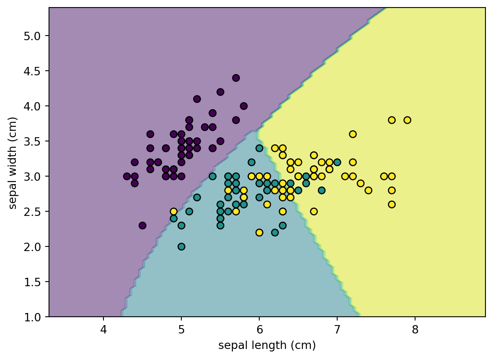
8.8.3 Boosting - XGBoost

import seaborn as sns
import pandas as pd
import numpy as np
import matplotlib.pyplot as plt
import warnings
warnings.filterwarnings("ignore")
diamonds = sns.load_dataset("diamonds")
diamonds.head()| carat | cut | color | clarity | depth | table | price | x | y | z | |
|---|---|---|---|---|---|---|---|---|---|---|
| 0 | 0.23 | Ideal | E | SI2 | 61.5 | 55.0 | 326 | 3.95 | 3.98 | 2.43 |
| 1 | 0.21 | Premium | E | SI1 | 59.8 | 61.0 | 326 | 3.89 | 3.84 | 2.31 |
| 2 | 0.23 | Good | E | VS1 | 56.9 | 65.0 | 327 | 4.05 | 4.07 | 2.31 |
| 3 | 0.29 | Premium | I | VS2 | 62.4 | 58.0 | 334 | 4.20 | 4.23 | 2.63 |
| 4 | 0.31 | Good | J | SI2 | 63.3 | 58.0 | 335 | 4.34 | 4.35 | 2.75 |
dataset Diamonds
diamonds.shape
print()
diamonds.describe(exclude = np) # sem exclusão de variáveis| carat | cut | color | clarity | depth | table | price | x | y | z | |
|---|---|---|---|---|---|---|---|---|---|---|
| count | 53940.000000 | 53940 | 53940 | 53940 | 53940.000000 | 53940.000000 | 53940.000000 | 53940.000000 | 53940.000000 | 53940.000000 |
| unique | NaN | 5 | 7 | 8 | NaN | NaN | NaN | NaN | NaN | NaN |
| top | NaN | Ideal | G | SI1 | NaN | NaN | NaN | NaN | NaN | NaN |
| freq | NaN | 21551 | 11292 | 13065 | NaN | NaN | NaN | NaN | NaN | NaN |
| mean | 0.797940 | NaN | NaN | NaN | 61.749405 | 57.457184 | 3932.799722 | 5.731157 | 5.734526 | 3.538734 |
| std | 0.474011 | NaN | NaN | NaN | 1.432621 | 2.234491 | 3989.439738 | 1.121761 | 1.142135 | 0.705699 |
| min | 0.200000 | NaN | NaN | NaN | 43.000000 | 43.000000 | 326.000000 | 0.000000 | 0.000000 | 0.000000 |
| 25% | 0.400000 | NaN | NaN | NaN | 61.000000 | 56.000000 | 950.000000 | 4.710000 | 4.720000 | 2.910000 |
| 50% | 0.700000 | NaN | NaN | NaN | 61.800000 | 57.000000 | 2401.000000 | 5.700000 | 5.710000 | 3.530000 |
| 75% | 1.040000 | NaN | NaN | NaN | 62.500000 | 59.000000 | 5324.250000 | 6.540000 | 6.540000 | 4.040000 |
| max | 5.010000 | NaN | NaN | NaN | 79.000000 | 95.000000 | 18823.000000 | 10.740000 | 58.900000 | 31.800000 |
from sklearn.model_selection import train_test_split
X, y = diamonds.drop('price', axis=1), diamonds[['price']]
# Extrair features de texto/categoricas
cats = X.select_dtypes(exclude=np.number).columns.tolist() # lista com as colunas que não são numericas
# Converter para categorias Pandas
for col in cats:
X[col] = X[col].astype('category')
X.dtypescarat float64
cut category
color category
clarity category
depth float64
table float64
x float64
y float64
z float64
dtype: object# Split the data
X_train, X_test, y_train, y_test = train_test_split(X, y, random_state=1923)
import xgboost as xgb
# Cria matrizes de regressão
dtrain_reg = xgb.DMatrix(X_train, y_train, enable_categorical=True)
dtest_reg = xgb.DMatrix(X_test, y_test, enable_categorical=True)
# Define hyperparametros
params = {"objective": "reg:squarederror", "tree_method": "exact"}
n = 100 # numero de vezes que faz o re-train
model = xgb.train(
params=params,
dtrain=dtrain_reg,
num_boost_round=n,
)from sklearn.metrics import mean_squared_error
preds = model.predict(dtest_reg)
rmse = mean_squared_error(y_test, preds, squared=False)
print(f"RMSE of the base model: {rmse:.3f}")RMSE of the base model: 546.209com validation sets
[0] train-rmse:2851.54115 validation-rmse:2885.52498[1] train-rmse:2075.99334 validation-rmse:2101.02007[2] train-rmse:1541.27780 validation-rmse:1564.66692[3] train-rmse:1177.51050 validation-rmse:1202.61956[4] train-rmse:938.78001 validation-rmse:962.67497[5] train-rmse:781.50843 validation-rmse:809.95955[6] train-rmse:685.28618 validation-rmse:717.84404[7] train-rmse:623.27618 validation-rmse:658.54710[8] train-rmse:585.50338 validation-rmse:620.17248[9] train-rmse:561.29675 validation-rmse:597.72672[10] train-rmse:543.44211 validation-rmse:582.69529[11] train-rmse:532.35474 validation-rmse:572.41923[12] train-rmse:522.30937 validation-rmse:565.70262[13] train-rmse:515.48104 validation-rmse:561.53956[14] train-rmse:510.63233 validation-rmse:558.28116[15] train-rmse:506.34619 validation-rmse:554.40824[16] train-rmse:499.64836 validation-rmse:553.28517[17] train-rmse:497.32876 validation-rmse:552.57399[18] train-rmse:491.05103 validation-rmse:551.14560[19] train-rmse:488.48323 validation-rmse:550.13292[20] train-rmse:484.71103 validation-rmse:550.63009[21] train-rmse:482.21843 validation-rmse:550.75955[22] train-rmse:478.51034 validation-rmse:551.12872[23] train-rmse:476.67467 validation-rmse:551.28953[24] train-rmse:474.49278 validation-rmse:551.73781[25] train-rmse:471.08966 validation-rmse:550.18362[26] train-rmse:467.87058 validation-rmse:549.19352[27] train-rmse:465.31173 validation-rmse:547.34390[28] train-rmse:464.28636 validation-rmse:547.39703[29] train-rmse:460.94143 validation-rmse:547.65231[30] train-rmse:460.48757 validation-rmse:547.30529[31] train-rmse:460.02334 validation-rmse:547.32384[32] train-rmse:456.83887 validation-rmse:547.63188[33] train-rmse:455.42693 validation-rmse:547.47029[34] train-rmse:451.00532 validation-rmse:547.30785[35] train-rmse:449.72204 validation-rmse:546.66477[36] train-rmse:446.97346 validation-rmse:547.71042[37] train-rmse:443.72536 validation-rmse:548.89474[38] train-rmse:442.84449 validation-rmse:548.36532[39] train-rmse:442.15598 validation-rmse:547.87521[40] train-rmse:440.95540 validation-rmse:547.09643[41] train-rmse:439.28889 validation-rmse:547.27049[42] train-rmse:438.17661 validation-rmse:546.75187[43] train-rmse:437.17148 validation-rmse:545.91500[44] train-rmse:436.34019 validation-rmse:546.24601[45] train-rmse:432.78323 validation-rmse:546.32314[46] train-rmse:429.86356 validation-rmse:546.52959[47] train-rmse:428.62182 validation-rmse:546.39635[48] train-rmse:426.76376 validation-rmse:547.30570[49] train-rmse:425.03735 validation-rmse:546.91084[50] train-rmse:423.83103 validation-rmse:547.84324[51] train-rmse:423.16624 validation-rmse:547.64548[52] train-rmse:421.91132 validation-rmse:547.53996[53] train-rmse:421.72375 validation-rmse:547.41005[54] train-rmse:421.01729 validation-rmse:547.61045[55] train-rmse:419.23700 validation-rmse:546.91899[56] train-rmse:416.94475 validation-rmse:547.88263[57] train-rmse:415.08363 validation-rmse:547.53615[58] train-rmse:414.57494 validation-rmse:547.56363[59] train-rmse:413.03458 validation-rmse:548.07752[60] train-rmse:411.16698 validation-rmse:548.19357[61] train-rmse:409.54243 validation-rmse:547.60719[62] train-rmse:408.17602 validation-rmse:547.38507[63] train-rmse:406.92073 validation-rmse:546.68228[64] train-rmse:405.42162 validation-rmse:545.88412[65] train-rmse:404.29907 validation-rmse:545.68149[66] train-rmse:404.17040 validation-rmse:545.69286[67] train-rmse:403.02720 validation-rmse:545.75936[68] train-rmse:401.92390 validation-rmse:545.56665[69] train-rmse:400.43239 validation-rmse:545.41915[70] train-rmse:399.54626 validation-rmse:545.66828[71] train-rmse:399.46133 validation-rmse:545.60366[72] train-rmse:399.20940 validation-rmse:545.56253[73] train-rmse:397.26732 validation-rmse:545.46926[74] train-rmse:396.44554 validation-rmse:545.36230[75] train-rmse:395.72026 validation-rmse:545.41617[76] train-rmse:394.79344 validation-rmse:545.04992[77] train-rmse:392.74388 validation-rmse:545.31822[78] train-rmse:391.93890 validation-rmse:544.74043[79] train-rmse:391.04432 validation-rmse:544.62966[80] train-rmse:390.54971 validation-rmse:544.40152[81] train-rmse:389.30857 validation-rmse:544.36426[82] train-rmse:389.12224 validation-rmse:544.24513[83] train-rmse:386.75351 validation-rmse:544.81242[84] train-rmse:384.85584 validation-rmse:544.74169[85] train-rmse:384.13838 validation-rmse:544.75912[86] train-rmse:383.13439 validation-rmse:544.31586[87] train-rmse:382.46996 validation-rmse:544.37377[88] train-rmse:380.46399 validation-rmse:544.66472[89] train-rmse:378.99535 validation-rmse:544.91259[90] train-rmse:378.04076 validation-rmse:544.37391[91] train-rmse:377.86955 validation-rmse:544.35478[92] train-rmse:377.29435 validation-rmse:544.26397[93] train-rmse:375.62168 validation-rmse:544.56371[94] train-rmse:374.51269 validation-rmse:545.08575[95] train-rmse:373.71698 validation-rmse:544.68374[96] train-rmse:372.93790 validation-rmse:545.54976[97] train-rmse:372.24304 validation-rmse:545.10499[98] train-rmse:370.85634 validation-rmse:546.15178[99] train-rmse:370.32271 validation-rmse:546.20862# com early stop
n = 10000
model = xgb.train(
params=params,
dtrain=dtrain_reg,
num_boost_round=n,
evals=evals,
verbose_eval=50,
# Activate early stopping
early_stopping_rounds=50
)[0] train-rmse:2851.54115 validation-rmse:2885.52498[50] train-rmse:423.83103 validation-rmse:547.84324[100] train-rmse:369.07945 validation-rmse:546.57607[132] train-rmse:344.97045 validation-rmse:549.19256com Cross-Validation
params = {"objective": "reg:squarederror", "tree_method": "exact"}
n = 1000
results = xgb.cv(
params, dtrain_reg,
num_boost_round=n,
nfold=5, # adicionado o nº de folds
early_stopping_rounds=20
)
results.tail()| train-rmse-mean | train-rmse-std | test-rmse-mean | test-rmse-std | |
|---|---|---|---|---|
| 35 | 441.539017 | 4.652373 | 551.692505 | 11.636016 |
| 36 | 438.157276 | 5.007577 | 552.302801 | 11.833530 |
| 37 | 435.889516 | 5.385259 | 551.947682 | 11.964930 |
| 38 | 433.413269 | 5.050729 | 551.837739 | 11.917136 |
| 39 | 432.287905 | 5.296268 | 551.562633 | 11.874399 |
8.8.4 Stacking

avaliar e comparar modelos incluindo stacking
# importar a função para fazer um dataset
from sklearn.datasets import make_classification
# definir o dataset com dados sinteticos
X, y = make_classification(n_samples=1000, n_features=20, n_informative=15, n_redundant=5, random_state=1973)
# caracteristicas do dataset
print(X.shape, y.shape)(1000, 20) (1000,)# todos os imports
from numpy import mean
from numpy import std
from sklearn.datasets import make_classification
from sklearn.model_selection import cross_val_score
from sklearn.model_selection import RepeatedStratifiedKFold
from sklearn.linear_model import LogisticRegression
from sklearn.neighbors import KNeighborsClassifier
from sklearn.tree import DecisionTreeClassifier
from sklearn.svm import SVC
from sklearn.naive_bayes import GaussianNB
from sklearn.ensemble import StackingClassifier
from matplotlib import pyplot
# função para dar o dataset
# tal como exemplificado em cima
def get_dataset():
X, y = make_classification(n_samples=1000, n_features=20, n_informative=15, n_redundant=5, random_state=1)
return X, y
# função para definir modelos
def get_models():
models = dict()
models['lr'] = LogisticRegression()
models['knn'] = KNeighborsClassifier()
models['cart'] = DecisionTreeClassifier()
models['svm'] = SVC()
models['bayes'] = GaussianNB()
return models
# avaliar um modelo usando cross-validation
def evaluate_model(model, X, y):
cv = RepeatedStratifiedKFold(n_splits=10, n_repeats=3, random_state=1)
# estamos a usar a accuracy para o scoring
scores = cross_val_score(model, X, y, scoring='accuracy', cv=cv, n_jobs=-1, error_score='raise')
return scores
# e agora podemos aplicar as funções definidas
X, y = get_dataset()
models = get_models()
# avalia os modelos e regista os resultados
results, names = list(), list()
for name, model in models.items():
scores = evaluate_model(model, X, y)
results.append(scores)
names.append(name)
print('>%s %.3f (%.3f)' % (name, mean(scores), std(scores)))>lr 0.866 (0.029)
>knn 0.931 (0.025)>cart 0.826 (0.045)>svm 0.957 (0.020)
>bayes 0.833 (0.031)# faz boxplot do desempenho dos modelos para comparação
pyplot.boxplot(results, labels=names, showmeans=True)
pyplot.show()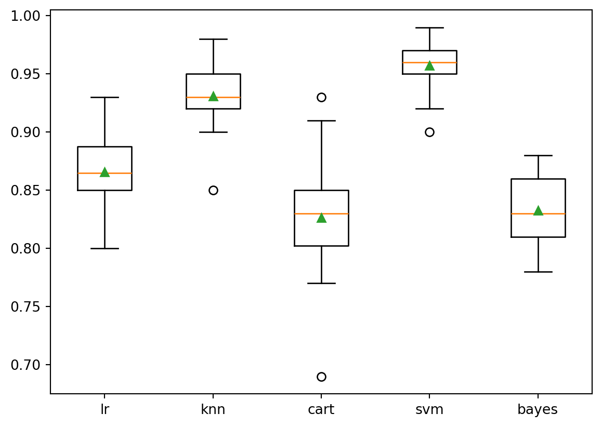
# define o stacking ensemble dos modelos
def get_stacking():
# define os modelos de base
level0 = list()
level0.append(('lr', LogisticRegression()))
level0.append(('knn', KNeighborsClassifier()))
level0.append(('cart', DecisionTreeClassifier()))
level0.append(('svm', SVC()))
level0.append(('bayes', GaussianNB()))
# define o modelo meta learner
level1 = LogisticRegression()
# define o stacking ensemble usando o Stacking Classifier e cross-validation
model = StackingClassifier(estimators=level0, final_estimator=level1, cv=5)
return model
# redefinimos a lista de modelos a avaliar acrescentando o stacking
def get_models():
models = dict()
models['lr'] = LogisticRegression()
models['knn'] = KNeighborsClassifier()
models['cart'] = DecisionTreeClassifier()
models['svm'] = SVC()
models['bayes'] = GaussianNB()
models['stacking'] = get_stacking()
return models
X, y = get_dataset()
models = get_models()
# avalia os modelos e regista os resultados
results, names = list(), list()
for name, model in models.items():
scores = evaluate_model(model, X, y)
results.append(scores)
names.append(name)
print('>%s %.3f (%.3f)' % (name, mean(scores), std(scores)))>lr 0.866 (0.029)
>knn 0.931 (0.025)>cart 0.820 (0.044)>svm 0.957 (0.020)
>bayes 0.833 (0.031)>stacking 0.965 (0.019)# faz boxplot do desempenho dos modelos para comparação
pyplot.boxplot(results, labels=names, showmeans=True)
pyplot.show()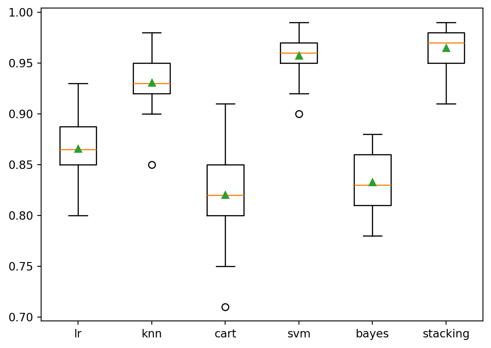
prever usando o sctaking de modelos
# imports
from sklearn.datasets import make_classification
from sklearn.ensemble import StackingClassifier
from sklearn.linear_model import LogisticRegression
from sklearn.neighbors import KNeighborsClassifier
from sklearn.tree import DecisionTreeClassifier
from sklearn.svm import SVC
from sklearn.naive_bayes import GaussianNB
# definir o dataset
X, y = make_classification(n_samples=1000, n_features=20, n_informative=15, n_redundant=5, random_state=1)# definir os modelos de base
level0 = list()
level0.append(('lr', LogisticRegression()))
level0.append(('knn', KNeighborsClassifier()))
level0.append(('cart', DecisionTreeClassifier()))
level0.append(('svm', SVC()))
level0.append(('bayes', GaussianNB()))
# definir o modelo meta learner
level1 = LogisticRegression()
# definir o stacking ensemble
model = StackingClassifier(estimators=level0, final_estimator=level1, cv=5)# treinar o modelo com todos os dados (fazer o fit)
model.fit(X, y)StackingClassifier(cv=5,
estimators=[('lr', LogisticRegression()),
('knn', KNeighborsClassifier()),
('cart', DecisionTreeClassifier()),
('svm', SVC()), ('bayes', GaussianNB())],
final_estimator=LogisticRegression())In a Jupyter environment, please rerun this cell to show the HTML representation or trust the notebook. On GitHub, the HTML representation is unable to render, please try loading this page with nbviewer.org.
StackingClassifier(cv=5,
estimators=[('lr', LogisticRegression()),
('knn', KNeighborsClassifier()),
('cart', DecisionTreeClassifier()),
('svm', SVC()), ('bayes', GaussianNB())],
final_estimator=LogisticRegression())LogisticRegression()
KNeighborsClassifier()
DecisionTreeClassifier()
SVC()
GaussianNB()
LogisticRegression()
# data é um novo dado
data = [[2.47475454,0.40165523,1.68081787,2.88940715,0.91704519,-3.07950644,4.39961206,0.72464273,-4.86563631,-6.06338084,-1.22209949,-0.4699618,1.01222748,-0.6899355,-0.53000581,6.86966784,-3.27211075,-6.59044146,-2.21290585,-3.139579]]
# prever para esse novo dado
ynew = model.predict(data)
print('Predicted Class: %d' % (ynew))Predicted Class: 0stacking para regressão
# importar
from numpy import mean
from numpy import std
from sklearn.datasets import make_regression
from sklearn.model_selection import cross_val_score
from sklearn.model_selection import RepeatedKFold
from sklearn.linear_model import LinearRegression
from sklearn.neighbors import KNeighborsRegressor
from sklearn.tree import DecisionTreeRegressor
from sklearn.svm import SVR
from sklearn.ensemble import StackingRegressor
from matplotlib import pyplot
# definir o dataset
# repare que estamos a usar a função make_regression e não a make_classification que usámos antes
def get_dataset():
X, y = make_regression(n_samples=1000, n_features=20, n_informative=15, noise=0.1, random_state=1985)
return X, y
# definir o stacking
def get_stacking():
# definir os modelos base
level0 = list()
level0.append(('knn', KNeighborsRegressor())) # em vez de KNeighborsClassifier
level0.append(('cart', DecisionTreeRegressor())) # em vez de DecisionTreeClassifier
level0.append(('svm', SVR())) # em vez de SVC
# definir o modelo meta learner
level1 = LinearRegression()
# definir o stacking ensemble
# usando o StackingRegressor em vez do StackingClassifier
model = StackingRegressor(estimators=level0, final_estimator=level1, cv=5)
return model
# definir a lista dos modelos a avaliar
def get_models():
models = dict()
models['knn'] = KNeighborsRegressor() # em vez de KNeighborsClassifier
models['cart'] = DecisionTreeRegressor() # em vez de DecisionTreeClassifier
models['svm'] = SVR() # em vez de SVC
models['stacking'] = get_stacking()
return models
# definir avaliação de um modelo usando cross-validation
def evaluate_model(model, X, y):
cv = RepeatedKFold(n_splits=10, n_repeats=3, random_state=1)
# estamos a usar neg_mean_absolute_error em vez da accuracy para o scoring
scores = cross_val_score(model, X, y, scoring='neg_mean_absolute_error', cv=cv, n_jobs=-1, error_score='raise')
return scores
X, y = get_dataset()
models = get_models()
# avalia os modelos e regista os resultados
results, names = list(), list()
for name, model in models.items():
scores = evaluate_model(model, X, y)
results.append(scores)
names.append(name)
print('>%s %.3f (%.3f)' % (name, mean(scores), std(scores)))
# boxplot do desempenho dos modelos para comparação
pyplot.boxplot(results, labels=names, showmeans=True)
pyplot.show()>knn -104.398 (8.536)>cart -144.126 (10.460)>svm -163.010 (12.175)>stacking -63.488 (5.983)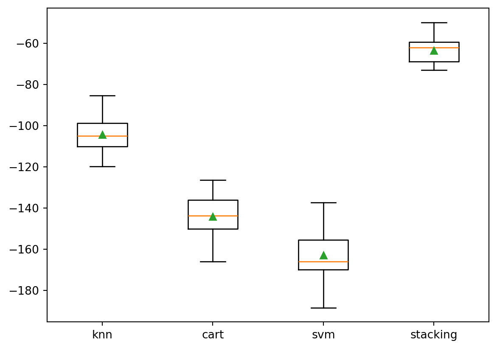
8.9 Bonus
8.9.1 Comparar os modelos com Decision Boundaries
# Code source: Gaël Varoquaux
# Andreas Müller
# Modified for documentation by Jaques Grobler
# License: BSD 3 clause
import matplotlib.pyplot as plt
import numpy as np
from matplotlib.colors import ListedColormap
from sklearn.datasets import make_circles, make_classification, make_moons
from sklearn.discriminant_analysis import QuadraticDiscriminantAnalysis
from sklearn.ensemble import AdaBoostClassifier, RandomForestClassifier
from sklearn.gaussian_process.kernels import RBF
from sklearn.inspection import DecisionBoundaryDisplay
from sklearn.model_selection import train_test_split
from sklearn.neighbors import KNeighborsClassifier
from sklearn.neural_network import MLPClassifier
from sklearn.pipeline import make_pipeline
from sklearn.preprocessing import StandardScaler
from sklearn.svm import SVC
from sklearn.tree import DecisionTreeClassifier
names = [
"Nearest Neighbors",
"Linear SVM",
"RBF SVM",
"Decision Tree",
"Random Forest",
"Neural Net",
"AdaBoost",
]
# instanciação dos métodos a usar, já com parametros
classifiers = [
KNeighborsClassifier(3),
SVC(kernel="linear", C=0.025, random_state=42),
SVC(gamma=2, C=1, random_state=42),
DecisionTreeClassifier(max_depth=5, random_state=42),
RandomForestClassifier(
max_depth=5, n_estimators=10, max_features=1, random_state=42
),
MLPClassifier(alpha=1, max_iter=1000, random_state=42),
AdaBoostClassifier(random_state=42),
]
# cria os dados sinteticos
X, y = make_classification(
n_features=2, n_redundant=0, n_informative=2, random_state=1, n_clusters_per_class=1
)
rng = np.random.RandomState(2000)
X += 2 * rng.uniform(size=X.shape)
linearly_separable = (X, y)
datasets = [
make_moons(noise=0.3, random_state=0),
make_circles(noise=0.2, factor=0.5, random_state=1),
linearly_separable,
]
figure = plt.figure(figsize=(27, 9))
i = 1
# iterate over datasets
for ds_cnt, ds in enumerate(datasets):
# preprocess dataset, split into training and test part
X, y = ds
X_train, X_test, y_train, y_test = train_test_split(
X, y, test_size=0.4, random_state=42
)
x_min, x_max = X[:, 0].min() - 0.5, X[:, 0].max() + 0.5
y_min, y_max = X[:, 1].min() - 0.5, X[:, 1].max() + 0.5
# just plot the dataset first
cm = plt.cm.RdBu
cm_bright = ListedColormap(["#FF0000", "#0000FF"])
ax = plt.subplot(len(datasets), len(classifiers) + 1, i)
if ds_cnt == 0:
ax.set_title("Input data")
# Plot the training points
ax.scatter(X_train[:, 0], X_train[:, 1], c=y_train, cmap=cm_bright, edgecolors="k")
# Plot the testing points
ax.scatter(
X_test[:, 0], X_test[:, 1], c=y_test, cmap=cm_bright, alpha=0.6, edgecolors="k"
)
ax.set_xlim(x_min, x_max)
ax.set_ylim(y_min, y_max)
ax.set_xticks(())
ax.set_yticks(())
i += 1
# iterate over classifiers
for name, clf in zip(names, classifiers): # a função zip cia o par num tuplo
ax = plt.subplot(len(datasets), len(classifiers) + 1, i)
clf = make_pipeline(StandardScaler(), clf)
clf.fit(X_train, y_train)
score = clf.score(X_test, y_test)
DecisionBoundaryDisplay.from_estimator(
clf, X, cmap=cm, alpha=0.8, ax=ax, eps=0.5
)
# Plot the training points
ax.scatter(
X_train[:, 0], X_train[:, 1], c=y_train, cmap=cm_bright, edgecolors="k"
)
# Plot the testing points
ax.scatter(
X_test[:, 0],
X_test[:, 1],
c=y_test,
cmap=cm_bright,
edgecolors="k",
alpha=0.6,
)
ax.set_xlim(x_min, x_max)
ax.set_ylim(y_min, y_max)
ax.set_xticks(())
ax.set_yticks(())
if ds_cnt == 0:
ax.set_title(name)
ax.text(
x_max - 0.3,
y_min + 0.3,
("%.2f" % score).lstrip("0"),
size=15,
horizontalalignment="right",
)
i += 1
plt.tight_layout()
plt.show()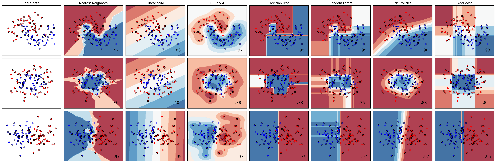
8.10 Comparação dos Modelos Complexos